![]()
前言
本项目旨在为读者提供一份系统、易懂的西方哲学史入门指南，涵盖从古希腊到现代的主要哲学流派和思想家。通过对关键概念和历史背景的介绍，帮助读者建立起对西方哲学发展的整体认识。
本项目主要脉络来自于大问题Dialetic的课程看透世界：100个哲学大概念开悟人生。文稿内容由作者与AI大模型协同完成。
引言
西方哲学的起源通常被追溯至古希腊世界，那是一个神话解释逐渐让位于理性思考、经验观察开始转化为理论反思的关键时代。在这一历史转折中，人类第一次系统地尝试以概念和论证的方式理解世界，而不再仅仅依赖传统叙事与宗教想象。从早期自然哲学家对宇宙本原的追问，到苏格拉底对伦理与知识的反思，再到柏拉图所建立的理念论体系，古希腊哲学逐步展开了一条从经验世界走向抽象本质的思想路径。这一路径不仅奠定了西方哲学的基本问题意识，也确立了理性探究作为知识正当性的核心标准。
本文将循着这一思想发展的内在逻辑展开论述：首先从自然哲学家关于“本原”的探索出发，分析他们如何以统一原则解释多样世界；继而转向苏格拉底所开启的伦理转向，探讨哲学如何从“世界是什么”过渡到“人应当如何生活”；随后讨论柏拉图如何在感性与理性之间建立区分，将哲学提升为对永恒理念的认识；最终抵达亚里士多德，考察其如何对前人思想加以综合与重构，建立起一个涵盖逻辑学、自然哲学与形而上学的系统性哲学体系。在这一展开过程中，我们不仅关注各个哲学家的具体观点，更重视他们之间的回应、修正与超越关系，从而呈现出西方哲学在其起源阶段的内在发展脉络。
1 第一章：古希腊哲学起源
1.1 泰勒斯： 水是万物的本原
古希腊哲学的开端，通常被追溯到公元前6世纪的小亚细亚地区爱奥尼亚沿岸的米利都城。在这一历史语境中，一批被后世称为“自然哲学家”的思想者，开始尝试摆脱神话叙事，以理性方式解释世界的起源与结构。其中，最早被视为哲学开创者的人物，便是泰勒斯。他提出“水是万物的本原”这一命题，试图以某种统一的原则来解释纷繁多样的自然现象。在他看来，世界上形形色色的事物，尽管在外观上千差万别，但在根本上可以还原为同一种存在形式。这种将多样归结为统一的思维方式，标志着哲学思考的真正起点。
1.1.1 什么是“本原”？
“本原”（arche）是理解早期古希腊哲学的核心概念之一。它不仅指某种时间意义上的开端或物质意义上的来源，更指向一种贯穿万物生成与变化始终的根本原则。换言之，本原既是“万物从何而来”的答案，也是“万物为何如此存在”的根据，它同时具有生成论与存在论的双重意义。正因为如此，对本原的追问，并不只是对世界起点的好奇，而是对整个存在秩序的理性探究。
在后来的总结中，亚里士多德曾对这一思想传统作出概括：一切存在着的东西由某种根本之物生成，又在毁灭时复归于它，尽管万物呈现出多样变化，但其根本根据却保持同一。这一概括准确地揭示了“本原”概念的关键特征，即它既是变化的起点，又是在变化中保持不变的东西。因此，本原并不是众多事物中的一个普通成员，而是使一切事物得以存在并维持统一性的根本基础。
从哲学意义上看，对“本原”的追问体现了一种深刻的思想冲动：在人们面对纷繁复杂、不断变化的现象世界时，总希望在其背后找到一个稳定的、不变的解释原则。经验世界呈现为多样与流变，而理性则试图在这种多样性之中发现统一性，在变化之中把握恒常性。本原正是这一理性追求的集中体现，它代表着对“多如何可能归于一”的根本回答。也正是在这一问题意识的推动下，早期自然哲学家展开了持续的探索。从泰勒斯提出“水”为本原，到阿纳克西曼德以“无定”（Apeiron）取而代之，再到阿那克西美尼以“气”为根基，不同思想家给出了各异的答案。然而，这些分歧并未动摇他们的共同前提：世界在其多样性背后，必然存在某种统一的、本质性的根据。正是这一前提，使得古希腊哲学从一开始便具有鲜明的形而上学取向，并为后来的哲学发展奠定了基本的问题框架。
1.1.2 自然哲学：用自然解释自然
以泰勒斯为代表的一批早期思想家，通常被称为“自然哲学家”（physiologoi）。这一称谓并非仅仅因为他们研究自然现象，更重要的是，他们开创了一种全新的解释方式：不再诉诸神话叙事或神祇意志，而是试图用自然本身的原则来解释自然。这一转变标志着人类思想从“讲述世界如何被创造”转向“分析世界如何运作”，从而奠定了理性探究的基本范式。
在古希腊早期的文化传统中，自然现象往往通过神话来理解，例如雷电被视为神的愤怒，海洋的风暴被归因于神的意志。然而，自然哲学家们开始拒绝这种解释路径，他们不再追问“是哪一位神导致了某种现象”，而是转而思考“这一现象本身遵循什么样的规律”。这种转向并不意味着对神话的简单否定，而是将世界视为一个可以通过理性加以理解的整体，且其运行具有内在的秩序与规律。正是在这一意义上，自然哲学构成了科学与哲学的共同起点。它既包含对具体自然现象的观察，也包含对这些现象背后统一原则的抽象思考。从阿纳克西曼德提出“无定”，到赫拉克利特强调“万物流变”，再到德谟克里特以“原子”解释世界结构，这一系列思想尝试表明，人类已经开始相信：自然本身就包含了解释自身的资源，而不需要借助外在的超自然力量。
然而，这一解释范式也具有其历史局限。由于自然哲学家主要依赖直观经验与初步观察，他们往往将日常生活中熟悉的事物（如水、气、火）提升为宇宙的根本原理，这使其理论带有明显的朴素性与直观性。尽管如此，这种尝试的意义并不在于其具体结论是否准确，而在于其方法论上的突破：世界可以被理解，并且应当通过理性与经验来理解。正是这一点，使自然哲学成为西方理性传统的真正起点，也为后来哲学从经验世界走向形而上学反思提供了必要的出发点。
1.2 阿纳克西曼德：万物的本原是“无定”
在泰勒斯之后，其学生阿纳克西曼德将关于本原的思考推进到了一个更高的抽象层次。如果说泰勒斯仍然在具体经验世界中寻找某种统一的基础，那么阿纳克西曼德则开始反思这一思路本身的局限。他指出，任何具体的自然事物，无论是水、火还是气，都具有特定的性质与边界，因此都不可能成为万物的最终本原。因为一旦将某一具体事物规定为本原，就无法合理解释与其相对立的事物如何产生。例如，如果水是本原，那么与其性质相反的火又从何而来？
正是在这一反思的基础上，阿纳克西曼德提出，本原必须不是某种具体的存在物，而应当是一个超越一切具体规定性的东西。他将这一根本原则称为“无定”（apeiron），即“无限定者”或“无界者”。“无定”没有固定的形态、性质或边界，它既不是水，也不是火，而是先于一切具体事物的存在基础。万物从“无定”中分化而出，在生成与变化的过程中彼此对立、相互制约，最终又复归于这一无界的源头之中。在这里，本原不再是某种可感知的实体，而是一种抽象的、无规定性的存在根基。
1.2.1 本质不可说
阿纳克西曼德的思想创见在于他意识到：如果本原是所有“被规定之物”的来源，那么它自身就不能再是一个“被规定的东西”。换言之，本原必须是不可限定、不可穷尽、甚至在某种意义上不可言说的。这一洞见在西方思想史中产生了深远回响，因为它触及了一个根本问题，即“人类的语言与概念，是否能够把握存在的终极本质？”
在中世纪的基督教神学传统中，阿纳克西曼德“无定”的思想以另一种形式回响为“上帝是不可言说的”这一观念。神学家发展出所谓“否定神学”（apophatic theology），主张上帝的本质超越了人类语言与理性的极限，因此无法用任何正面的概念加以规定。人们不能真正说“上帝是什么”，只能通过否定的方式逼近其本质，即说明上帝“不是什么”。例如，在描述上帝时，并不简单地说“上帝是善良的”或“上帝是智慧的”，因为这些概念都来自有限的人类经验，反而会限制上帝的绝对性；相反，神学家会说“上帝不是有限的善”“上帝不是无知的”“上帝不是物质的”，以此强调其超越性。托马斯·阿奎那在《神学大全》中明确指出，人类关于上帝的语言始终是间接的，我们无法把握其本质本身。举例来说，当人们说“上帝是光”时，这并非指物理意义上的光，而是一种比喻性的表达；而更严格的说法则是“上帝不是黑暗”“上帝不是有限之光”。因此，中世纪神学家往往使用“不可见的、不可分的、不可变的、无限的”等否定性表述，来强调上帝作为终极实在的超越性。这种通过否定来逼近本质的思路，与阿纳克西曼德提出“无定”作为一切规定之物的根源，在思想结构上形成了深刻的呼应。
到了近代，这一问题再次以更加自觉的哲学形式出现。康德提出“物自体”的概念，区分了“现象”与“自在之物”，认为人类所能认识的，仅仅是经过感性形式与知性范畴加工之后呈现出来的经验世界，而事物本身的真实面貌则始终处于认识之外。在这一意义上，“物自体”并非一个可以被直接把握的对象，而是一个原则性的限界概念，它标示出人类认知的边界，因此同样具有某种“不可言说性”。这种对“不可认识之物”的承认，与阿纳克西曼德关于本原不可被规定的思想，在结构上形成了呼应。在当代科学中，宇宙学所讨论的“奇点”，也被描述为一个密度趋于无限、时空结构失效、现有理论无法加以描述的极限状态。在这一点上，科学同样遭遇了自身解释能力的边界：当理论推进至某一极端时，原有的概念体系不再适用，只能以“不可描述”或“理论失效”来标记这一极限。正如维特根斯坦在《逻辑哲学论》结尾所说，“对于不可言说的东西，我们必须保持沉默”。这里的“沉默”，并非否认这些问题的意义，而是承认语言与逻辑的界限。当人类试图用概念去把握一切时，总会在某个边界上遭遇无法言说之物，而这一边界本身，反而揭示了理性的结构。在人类理性在不断扩展自身边界的同时，“为什么存在某物，而不是一无所有”这一问题始终反复出现。阿纳克西曼德提出“无定”作为本原，正是对这一终极问题的早期回应。“无定”既不是某种具体的“有”，也不是简单的“无”，而是超越一切规定性的根基，是一切存在得以可能的源泉。正因为有这样一个无限定的基础，具体存在才能从中分化、生成并展开，从而使“存在”本身成为可能。
1.3 赫拉克利特：人无法两次踏入同一条河流
另一位古希腊哲学家，赫拉克利特，常被后世称为“晦涩者”。这一称谓既指他晦暗难解的表达方式，也反映了其思想本身的张力与深度。与此前以解释自然本原为主要目标的自然哲学家不同，他并不致力于提出一个可以直接把握的“答案”，而是通过富于悖论性与象征性的语言，引导人们反思世界的根本结构。他出身于以弗所的贵族家庭，本有机会继承政治权力，却主动放弃公共事务，选择远离城邦生活，以近乎隐逸的姿态从事哲学思考。赫拉克利特的著作并未采用系统论证的形式，而是由高度凝练的格言组成，这些片段往往简短而意味深长，甚至刻意保留歧义与张力，使读者必须在反复咀嚼中把握其含义。
赫拉克利特最为人熟知的断言是：“人无法两次踏入同一条河流。”这一命题表面上指向经验事实，即河水不断流动，前后两次所接触的水已不相同；而更深层的含义，则在于揭示存在的根本特征：一切都处于不断的变化之中。人自身也在变化之中，因此所谓“同一性”，并不意味着某种静止不变的实体，而是一种在变化过程中得以维持的连续性。后来，他的学生克拉底鲁将这一思想推向极端，提出“人甚至连一次也无法踏入同一条河流”，从而走向一种彻底的流变论与相对主义。但这一激进化的理解，实际上偏离了赫拉克利特原本的思想旨趣。赫拉克利特真正要表达的，并非简单地否认一切稳定性，而是强调：世界的基本特征在于生成与变化，即“一切皆流”。在他看来，所谓“恒常”并不是某种静止的存在，而是一种在变化之中保持自身的秩序。例如，一条河流之所以仍然被称为“同一条河”，并不是因为其中的水保持不变，而是因为它遵循着一定的河道与流动方式。由此可见，变化并不意味着混乱，相反，它本身包含着某种内在的结构与规律。
1.3.1 世界是一团永恒燃烧的大火
为了刻画这种持续生成与变化的世界图景，赫拉克利特提出了“世界是一团永恒燃烧的大火”。这里的“火”并不应被理解为一种具体的自然元素，而是一种象征性的表达，用以指代不断转化、生成与消逝的过程。火既在燃烧，又在熄灭，它在消耗中维持自身，在变化中保持连续性，因此成为描述世界本性的最佳隐喻。在这一意义上，“火”体现的不是某种稳定的实体，而是一种始终处于运动之中的存在方式。在对“火”的描述中，赫拉克利特强调了变化的双向性，即向上与向下的过程：一方面，火趋于熄灭、冷却与凝聚，呈现出分化与下行的趋势；另一方面，它又不断复燃、升腾与统一，呈现出回归与上升的趋势。世界正是在这种张与弛、炽与冷的对立运动中展开，并形成一种循环往复的整体结构。宇宙既不是静止的，也不是单向发展的，而是在不断的生成与消解中实现自我更新。
这一循环性的宇宙观对后世思想产生了深远的影响。古希腊的斯多葛学派继承并系统化了赫拉克利特关于“火”与“流变”的思想，将其发展为“宇宙大劫火”的理论图景。在他们看来，宇宙并非一次性生成并线性发展的整体，而是处于周期性的生成与毁灭之中：在某一阶段，万物归于普遍的火之同一；随后，又从这一统一状态重新分化、展开，进入新的宇宙周期。这样的宇宙观不仅提供了一种解释自然变化的宏观框架，也将个体生命置于更为宏大的循环秩序之中，使存在本身获得了一种宇宙论意义上的必然性与规律性。到了近代，尼采以“永恒轮回”的思想重新激活了这一古老结构。尼采的思想赋予了宇宙循环观存在论与价值论的深刻含义：如果一切都会无限次重复，那么每一个当下的选择与行动都具有绝对的分量。循环不再只是宇宙运行的方式，而成为对生命态度的严峻考验。在现代科学语境中，部分宇宙学模型开始设想宇宙并非单次诞生，而是可能经历反复的膨胀与收缩过程。即所谓的“振荡宇宙模型”，认为宇宙在经历膨胀之后，可能在引力作用下重新收缩，最终回到一种类似初始状态的高密度阶段，随后再次发生“爆炸”，从而进入新的宇宙周期。
与其他自然哲学家试图在万变之中寻找某种不变实体作为本原不同，赫拉克利特的独特之处在于，他将“变化本身”提升为世界的根本特征。这一立场看似否定了稳定性与本质的存在，但实际上并未导向彻底的无序或相对主义。相反，赫拉克利特始终坚持：在持续流变的表象之下，存在着一个恒定的理性原则，即“逻各斯”（logos）。正是这一原则，使得变化不是杂乱无章的堆积，而是一种有内在结构的展开。因此，赫拉克利特的思想在“流变”与“存在”之间建立起一种张力关系：世界在不断变化，但这种变化本身是有法则的；个体在不断生成与消逝，但整体秩序却得以维持。也正因为如此，人类理性才有可能在变动不居的经验世界中把握某种稳定的理解框架。可以说，赫拉克利特通过“流变”与“逻各斯”的结合，首次提出了一种动态的秩序观：世界既不是静止的实体集合，也不是混乱的偶然堆积，而是在变化之中展开自身、并在变化之中保持可理解性的整体。
1.3.2 逻各斯
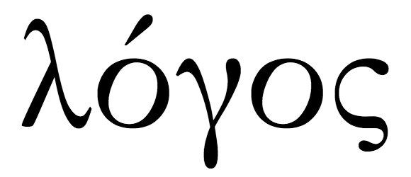
“逻各斯”（logos）在最初的语义层面既指言语、陈述，也指道路、法则，由此逐渐引申出规律、尺度与理性的含义。在赫拉克利特那里，这一概念被赋予了核心的哲学地位。当他说“世界是一团永恒燃烧的大火，按照一定尺度燃烧，按照一定尺度熄灭”时，这一“尺度”正是逻各斯的体现。它并不是某一具体存在物，而是一种贯穿万物生成与消逝的内在秩序，使得世界虽处于不断流变之中，却依然呈现出可理解的结构。换言之，逻各斯既不是与变化对立的静止本体，也不是外在强加于世界的规则，而是变化本身所内含的理则。正因为如此，逻各斯既意味着“可以被言说的东西”，也意味着“使言说成为可能的法度”。世界之所以能够被理解，是因为它本身具有某种理性结构，而人类的语言与思维正是与这一结构相契合的。在这一意义上，赫拉克利特实际上提出了一种深刻的对应关系：思维与存在之间并非偶然相遇，而是通过逻各斯这一共同原则而内在贯通。
从思想气质上看，逻各斯常被类比为一种西方意义上的“道”。它不是一个静止的实体，而是一种贯通万物、支配变化的理与则，使得生成与消逝呈现为“有序的变化”。后来的斯多葛学派继承并发展了这一观念，将逻各斯理解为弥漫于宇宙之中的理性原则，甚至赋予其某种神性意味，将其视为“世界理性”。在他们看来，宇宙本身就是一个有理性的整体，而逻各斯则是这一整体的内在法则，它既构成自然秩序，也支配自然的运行。由此，人类理性不再是孤立的主观能力，而是宇宙理性在个体中的体现。人之所以能够理解世界，是因为人的理性与世界的逻各斯在本质上是同源的。这一思想进一步延伸到伦理与政治领域，形成了“按照自然生活”的理想：即通过遵循理性，使个体行为与宇宙的普遍法则相一致，从而实现人与世界的和谐统一。在基督教神学中，逻各斯则被进一步神学化。《约翰福音》开篇所言“太初有道，道与神同在，道就是神”，将希腊哲学中的“逻各斯”与一神论信仰结合在一起。在这里，逻各斯不再仅仅是抽象的理性原则，而被理解为神自身的表达与显现，是神的“言”（word）与创造之道。宇宙并非偶然生成，而是通过逻各斯被“说出”并维系，这意味着世界的可理解性根源于神的理性本性。更进一步来说，基督教通过“道成肉身”的教义，使逻各斯获得了历史性的具体化。按照这一教义，逻各斯在耶稣基督身上成为肉身，从而将超越性的理性原则带入具体的历史与人类经验之中。由此，逻各斯不仅是宇宙秩序的根基，也成为人与神之间沟通的中介，是意义、真理与救赎得以实现的路径。
以逻各斯为轴心，赫拉克利特构建出一种富有张力的世界图景：一方面，自然万物处于持续的生成与消逝之中，呈现出如火般流动不居的状态；另一方面，这种流变又始终受制于一个不变的理性原则。由此，世界既不是由静止实体构成的集合，也不是毫无秩序的混乱过程，而是在变化之中展开的有序整体。正是在这一转向中，哲学开始从对具体元素（如水、火、土、气）的追问，迈向对抽象原则与理性结构的把握。可以说，逻各斯的提出标志着思想史上的一个关键跃迁：世界的本质不再被理解为某种可感的材料，而被理解为一种超越经验、却又内在于经验之中的理性秩序。因此，尽管赫拉克利特强调“万物流变”，他同时也通过逻各斯表明，这种流变本身是可理解、可言说并具有内在法则的，从而为后来的形而上学传统奠定了重要基础。
1.4 德谟克里特：原子论
“原子论”是古希腊哲学家德谟克里特最具代表性的思想成果，它标志着古希腊自然哲学在解释世界本原问题上的一次重要转向。如果说此前的哲学家或从经验出发（如水、火、气），或从抽象原则出发（如“无定”或“逻各斯”），那么德谟克里特则试图在二者之间建立一种新的解释路径：既承认世界由某种最基本的实体构成，又强调这一实体并非经验可见之物，而是通过理性推论得出的不可再分的存在单位。
在这一理论中，所谓“原子”（atom）并不是现代物理学意义上的原子，而是一种通过哲学思辨提出的“不可再分的物质微粒”。它们构成了一切存在的最终基础，是对“事物是否可以无限分割”这一问题的明确回应。直观经验往往使人倾向于认为事物可以无限细分，例如中国古代所谓“一尺之棰，日取其半，万世不竭”的设想，但德谟克里特则通过哲学论证指出：如果分割可以无限进行，那么实体将无法真正存在，因为任何具体之物都无法达到确定的存在状态。因此，必须设定某种不可再分的最小单位，作为一切存在的基础。在德谟克里特看来，这些原子在数量上是无限的，在性质上则是同质的。它们之间并不存在“质”的差别，唯一的区别体现在大小、形状以及排列方式上。正是由于这些差异，原子在虚空中发生不同的组合与运动，从而生成我们所经验到的各种事物。由此，经验世界中看似多样的性质差异，被还原为原子结构上的差异，即“质”的差别被转化为“量”与“结构”的差别。德谟克里特的这种思路具有重要的哲学意义：它首次系统地提出，复杂现象可以通过简单要素的组合来解释，从而为后来的科学方法提供了基本的还原论框架。不同于另一位古希腊哲学家阿纳克萨戈拉的“种子”学说，即认为万物由无数彼此异质的“种子”构成，世界中存在多少种类的事物，就有多少种类的基本单位；德谟克里特主张，所有事物都可以还原为同一种本质单位的不同组合。这一从“多元本原”走向“单一本原”的转变，不仅简化了对世界的解释，也使得世界结构在原则上可以被统一理解。正是在这一意义上，德谟克里特的原子论，被视为西方科学思维的重要先声。
1.4.1 唯物主义
在整体世界观上，德谟克里特体现出一种典型的唯物主义立场。他认为，世界的本原是物质性的，一切存在与变化都可以归结为原子的运动与组合，而不存在任何超越性的精神实体或目的性原则。神灵、灵魂乃至意识，都不再被视为独立于物质之外的存在，而是原子运动的不同表现形式。即便承认灵魂的存在，它也不过是由某种特殊形态的原子构成，这些原子更加细微、更加活跃，从而赋予生命以感知与运动的能力。
在认识论上，德谟克里特对知识来源与可靠性的区分。他将认识划分为感性认识与理性认识两种层次：前者来源于感官经验，是人与外部世界直接接触的结果；后者则通过思辨与推理形成，是对现象背后结构的把握。在他看来，感性认识虽然构成了一切认知的起点，却并不具有最终的可靠性，因为它所呈现的只是事物在经验层面的表象，而非其本质。德谟克里特用一种近似“机制论”的方式解释感知过程：万物不断向外释放出某种“影像”或“薄膜”（eidola），这些微小结构进入人的感官，与灵魂中的原子发生接触，从而产生视觉、听觉等感觉。由此，感知并非直接把握事物本身，而是对这些“影像”的反应。因此，我们所看到的颜色、味道或声音，并不是原子本身固有的性质，而只是原子排列方式对感官所产生的效果。这一观点意味着，感性经验在本质上具有相对性与局限性，它依赖于主体的感官结构，也依赖于原子组合的具体方式。正因为如此，德谟克里特认为，真正的知识不能停留在感性层面，而必须通过理性加以提升。理性认识并不直接依赖感官，而是对感性材料进行分析、抽象与推论，从而揭示其背后的统一结构。人们无法直接感知原子，但可以通过对现象的解释推导出它们的存在：例如，事物的生成与消解、形态的变化以及运动的连续性，都可以被理解为原子的组合与分离过程。
这一立场在思想史上具有重要意义。它不仅揭示了经验与本质之间的张力，也预示了后来哲学中的一个核心问题：感官所给予我们的世界，是否等同于世界本身？从这一问题出发，后来的哲学不断深化对认识条件与认知结构的反思。例如，在柏拉图那里，感性世界被视为理念世界的影子；而在近代，康德则进一步区分了现象与“物自体”，强调认识始终受到主体结构的限制。可以说，德谟克里特关于感性与理性的区分，虽然仍处于早期形态，却已经触及了认识论最根本的问题：人类如何在有限的经验条件下，把握一个超出经验的真实世界。由此，这一唯物主义立场自然导向一种对世界的整体理解方式：世界并非由目的或意义所支配，而是由物质运动的规律所决定。存在的根本不在于“为何如此”，而在于“如何如此”。德谟克里特的这一认识论转向，使哲学从对目的与价值的探问，转向对结构与因果的分析，从而为后来的科学思维奠定了重要基础。
1.4.2 决定论
在德谟克里特的体系中，原子的运动并非随机发生，而是遵循严格的因果规律。宇宙中的一切变化，都可以被理解为原子在虚空中的运动、碰撞与重新组合，这些过程在原则上都是必然的。因此，世界呈现为一个完全由因果链条支配的整体，每一个事件都可以追溯到先前的状态。
遵循德谟克里特的思路，这一决定论的立场在近代科学中得到了前所未有的强化，并发展为一种系统化的世界图景。以牛顿所建立的经典力学为代表，自然界被理解为一个严格遵循数学规律运行的体系。在这一框架中，只要给定系统的初始条件与确定的运动定律，未来的状态在原则上便可以被精确推导出来。这代表着自然不再是充满偶然与神秘的领域，而是一个可以通过计算与推演完全把握的机制系统。在这一基础上，拉普拉斯提出了著名的“拉普拉斯妖”思想实验：如果存在一种理智能够在某一时刻掌握宇宙中所有粒子的位置与速度，并且具备无限的计算能力，那么宇宙的过去与未来将如同一本已经展开的书一般清晰可见。在这一极端设想中，偶然性被完全排除，世界呈现为一个由必然因果链条彻底贯通的整体。在这样的理论框架下，自由意志的问题变得尤为尖锐。如果人类的思想与行为本质上也是物质运动的结果，那么所谓“选择”似乎不过是复杂因果关系的体现，而非真正意义上的自由。人的决策、意图乃至情感，都可以被还原为粒子运动的某种结果，从而失去了独立的因果地位。这种严格的决定论不仅影响了科学对自然的理解，也深刻塑造了近代哲学对于主体与自由的讨论，使“人是否能够真正自主行动”成为一个核心问题。
然而，这一看似完备的决定论图景并未在思想史中长期保持统治地位。早在古希腊时期，伊比鸠鲁便在继承原子论的基础上提出修正。他认为，如果原子的运动完全遵循直线与必然的碰撞关系，那么一切都将被严格决定，从而无法解释人的选择与责任。因此，他引入“偏斜”（clinamen）的概念，主张原子在运动过程中会发生微小且不可预测的偏离，这种偏离打破了因果链条的绝对闭合，使偶然性成为可能。正是在这一微小的裂隙中，自由意志获得了存在的空间。虽然这一设想在物理层面缺乏严格论证，但在哲学上却具有重要意义，它表明人类早已意识到：如果世界完全被必然性封闭，那么自由与责任将难以成立。到了现代，这一问题再次以新的形式出现，并在科学内部引发深刻变革。量子力学的发展表明，在微观层面上，物理过程并不完全服从经典意义上的确定性规律。例如，不确定性原理指出，粒子的某些物理量（如位置与动量）无法被同时精确测定，系统的演化只能以概率形式加以描述。这意味着，即使掌握了系统的全部已知信息，其未来状态也只能以概率方式预测，而非确定性地推导出来。虽然这一理论与古代原子论在方法与内容上存在根本差异，但它同样揭示了一个关键事实：自然界并非在所有层面上都服从严格的决定性法则。
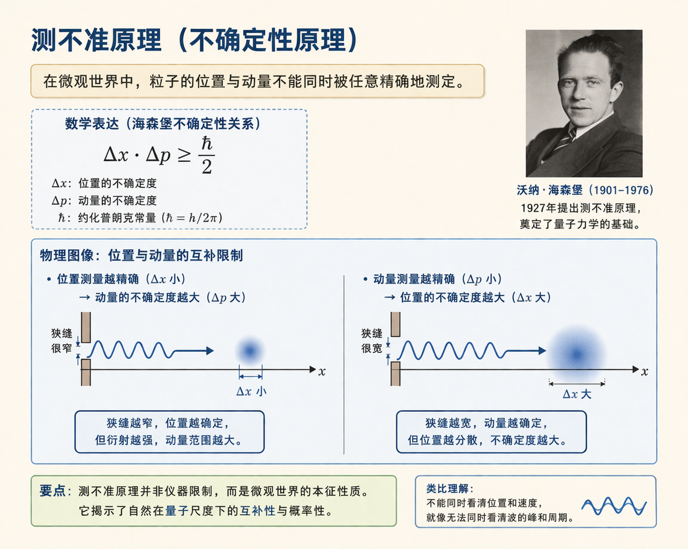
从德谟克里特到近代经典力学，再到现代量子理论，人类对于“必然性与自由”的理解经历了不断深化与修正的过程。德谟克里特的原子论最初提出了一种以必然性为核心的世界图景，而后来的思想发展则不断在这一图景中引入不确定性与开放性。可以说，围绕着“世界是否完全由因果规律所支配”这一问题，哲学与科学始终在对话与张力之中前行，而原子论正是这一长期思想传统的重要起点。
1.5 毕达哥拉斯：万物皆数
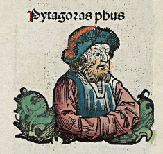
古希腊数学家、哲学家毕达哥拉斯在古希腊哲学史上代表着一种重要的转向：从对具体自然本原的追问，转向对抽象结构与形式的探究。他提出“万物皆数”的命题，认为世界最根本的构成并非水、火、土、气之类的物质元素，而是“数”。这一思想标志着哲学开始从经验世界中抽离出来，转而以理性把握世界的深层结构。在毕达哥拉斯看来，真正构成世界秩序的，并不是可感之物，而是那些可以被理解、被证明、并具有普遍有效性的数之关系。
与此前哲学家不同，毕达哥拉斯并不满足于在经验中寻找某种具体本原。他意识到，具体之物总是具有某种特殊性质，因此难以成为普遍的解释基础；而“无定”虽然抽象，却缺乏可确定性，无法提供清晰的结构。因此，本原必须同时具备抽象性与确定性。“数”恰恰满足这一要求：它对感官而言是不可见的，但对理性而言却是清晰、确定且可运算的。正是在这一意义上，毕达哥拉斯将经验事实提升为数学法则，例如将直角三角形的经验性质概括为普遍成立的定理，使世界的秩序以数的形式得以表达。在“数”为本原的设想之下，毕达哥拉斯构建出一种由简入繁的宇宙生成图景：一生二，二生多，多生点，点生线，线生面，面生体，体生水火土气，水火土气再生万物。数字首先规定出最基本的离散多样性，由此生出几何的点、线与面，继而形成有体积的实体，再由实体生成自然元素，最终铺陈为丰富的感性世界。这一“数—形—物”的连续结构表明，世界并非由杂乱的物质堆积而成，而是由一种内在的数学秩序逐层展开。由此，宇宙被理解为一个可以被理性把握的结构体系，而非仅仅是感官经验的集合。
这一思想在近代科学中得到了深刻而系统的回应。伽利略所说的“宇宙这本大书是用数学语言写成的”，即是对科学方法的一种原则性概括：自然现象之所以能够被理解，是因为它们可以被转化为数量关系与数学结构来表达。在经典力学中，物体的运动被写成精确的方程；在天文学中，行星的轨道遵循严格的数学规律；在更广泛的物理学中，对称性与守恒律则以群论与方程形式呈现。科学不再只是描述“事物是什么样”，而是通过数学揭示“事物为何如此运作”。由此，世界的可知性越来越被理解为一种可数学化的可知性，即只有当现象能够被纳入数学结构之中时，它才真正成为科学认识的对象。这一趋势在近现代科学的发展中不断强化，数学不再仅是描述自然的工具，更逐渐成为构建理论的核心框架。在许多情况下，科学理论并不是从经验直接归纳出来，而是首先在数学结构中形成，再由实验加以验证。例如，许多物理理论中的关键概念，往往先在数学上具有一致性与必然性，随后才在经验中得到对应。这种“以数学为先导”的研究方式，使人们逐渐倾向于认为，世界的深层结构本身就是一种数学结构，而非仅仅可以被数学描述。在当代思想中，这一倾向被进一步推进为一种形而上学命题。马克斯·泰格马克提出“数学宇宙假说”，主张宇宙不仅可以用数学来描述，而且本身就是数学结构。按照这一观点，所谓“物理存在”，并不是独立于数学之外的实体，而是数学关系的具体实现；世界中的对象，不过是数学结构中的节点与关系的体现。由此，现实与数学之间的关系被彻底反转：不再是数学描述世界，而是世界本身即为数学。同样，大卫·查尔莫斯从信息哲学的角度提出，现实可以被理解为一种由“比特”构成的结构，即世界在根本上是计算与信息的展开。在这一框架中，物质与精神都可以被还原为信息状态的不同组织方式，现实不再被理解为实体的集合，而是过程与结构的网络。
尽管这些当代理论在方法论与科学基础上与古希腊哲学存在根本差异，但它们在思想结构上却与毕达哥拉斯的“万物皆数”形成了跨越时代的呼应。无论是将世界还原为数，还是将世界理解为数学结构或信息过程，都指向同一个核心命题：世界的深层实在，并非直接可感的物质本身，而是一种可以被理性把握的抽象关系。正是在这一意义上，毕达哥拉斯的思想不仅属于古希腊哲学的起点之一，也构成了贯穿整个西方思想史的一条重要线索。
1.5.1 毕达哥拉斯的认识论
在认识论上，毕达哥拉斯提出了一种明确的区分，即“数”与“形”的区分。感官所把握的，是具体可见的“形”；而理性所把握的，则是支配这些形象的“数”。在他看来，感官经验是不稳定且容易误导的，因为不同的观察条件会导致不同的呈现，而理性所把握的数之关系却具有普遍性与必然性。例如，一个具体的三角形可能大小不同、形状各异，但只要满足某种比例关系，它就必然是直角三角形。这种关系并不依赖于具体对象，而是独立存在于理性之中。
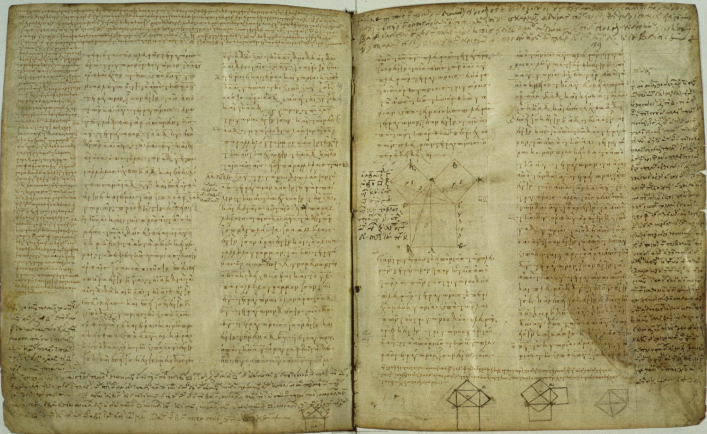
由此，毕达哥拉斯确立了一种重要的认识尺度：真正的知识并不来自感官，而来自理性对抽象结构的把握。即便没有任何具体事物存在，这些数学关系依然成立，因此它们具有一种独立于经验的存在方式。这一思想不仅强调了理性认识的优先性，也为后来的哲学提供了一种基本范式，即通过抽象与推演把握世界的本质结构，而非依赖经验的直接呈现。
1.5.2 主流形而上学的开端
与德谟克里特的原子论类似，毕达哥拉斯的“万物皆数”同样体现出一种还原论的取向，但二者在方向上却截然不同。德谟克里特将世界还原为不可见的物质微粒，而毕达哥拉斯则更进一步，将世界还原为纯粹抽象的数之关系。这意味着，世界的本原不再是某种物质性的存在，而是一种理性结构。这一转向对后世哲学产生了深远影响。柏拉图的理念论，正是在这一基础上发展起来的：可感世界被视为不稳定的摹本，而真正的存在则是独立而不变的理念。数学与几何因其抽象性与确定性，被视为通向本体的路径。柏拉图学院门前“无几何学者不得入内”的箴言，正体现了这一思想传统的核心精神，即通过理性把握抽象结构，从而理解世界的本质。
由此可以看到，从毕达哥拉斯开始，哲学逐渐从对经验材料的依赖中脱离出来，转向对超感性原则的探究。这一转向构成了西方主流形而上学的起点，使“本质”不再被理解为某种可感的实体，而被理解为一种抽象的、理性的结构。
1.5.3 神秘主义
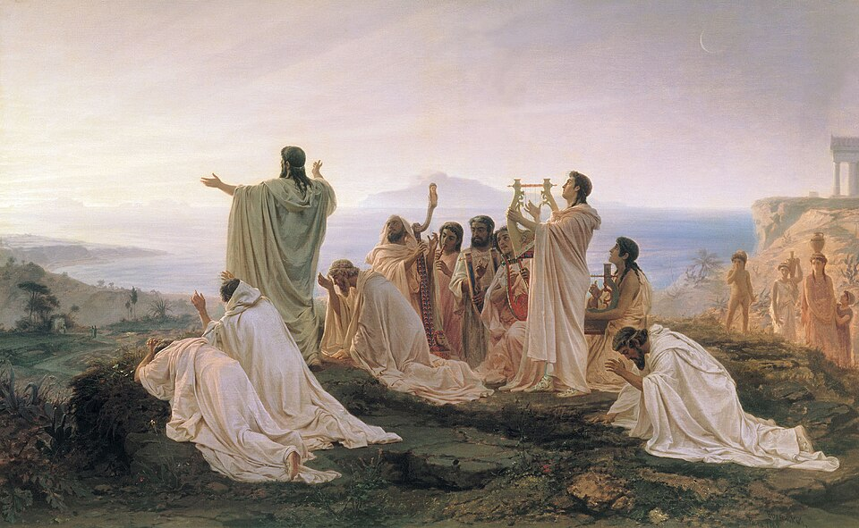
尽管毕达哥拉斯在思想上开启了理性化与抽象化的道路，他的学派却同时带有鲜明的神秘主义色彩。毕达哥拉斯学派不仅是一个哲学共同体，也具有类似宗教团体的组织形式，其成员必须遵守严格的生活规范与禁忌。这些戒律涵盖饮食、行为乃至日常细节，例如不准吃肉，不准吃豆子，不捡地上掉落之物，不走在路中央，不触碰白公鸡等。在毕达哥拉斯这里，数不仅是解释世界的工具，也具有某种神圣意味。宇宙的秩序被理解为数的和谐，而人的生活则被视为参与这一和谐的一种方式。在这一意义上，毕达哥拉斯学派呈现出一种独特而富有张力的思想结构：一方面，它以数与证明为基础，推动了理性认识的发展，将世界理解为可以被推演、被证明的秩序；另一方面，它又通过严格的仪式与禁忌维系一种具有宗教性质的共同体生活，使哲学活动并不只是纯粹的认知行为，而同时是一种生活方式与精神实践。这种理性与神秘并存的结构，使毕达哥拉斯学派既不像后来纯粹的科学传统，也不同于单一的宗教信仰，而是在两者之间形成了一种独特的融合形态。
从更深层来看，这种融合并非偶然，而是与数学本身的认识方式密切相关。数学不同于经验科学，它并不依赖感官观察或实验验证，而是建立在公理与定义之上，通过严格的逻辑推演展开。在这一过程中，真理的标准不是经验的符合性，而是体系内部的逻辑自洽与必然性。这种“自足性”使数学呈现出一种类似形而上学甚至宗教的特征：它所揭示的并不是经验世界的偶然事实，而是一种超越具体经验、具有普遍有效性的秩序。因此，对于从事数学研究的人来说，承认或不承认宗教信仰，并不会直接影响其理论活动的有效性，因为数学的真理并不依赖经验世界的检验，而依赖于逻辑结构本身。正是在这一背景下，历史上不乏同时具有高度理性能力与宗教信仰的思想家与科学家。对他们而言，数学所呈现的秩序、对称与和谐，并不仅仅是工具性的结构，而往往被理解为某种更高层次存在的痕迹或体现。例如，开普勒在研究行星运动时，将天体的运行视为“上帝几何设计”的显现；牛顿则在建立力学体系的同时，坚信宇宙的秩序体现了神的智慧。在这些思想家看来，数学并非单纯的人类发明，而更像是被“发现”的结构，是宇宙本身所遵循的理性法则。在哲学传统中，也出现过将理性推向宗教结论的努力。中世纪的安瑟尔谟提出“本体论证明”，试图仅凭概念分析来论证上帝的存在：既然我们能够设想一个“无可更大者”，那么这一存在若仅存在于思想之中，就不如同时存在于现实与思想之中那样完满，因此它必须在现实中存在。这一论证并不依赖经验，而是完全建立在逻辑与概念的推演之上。后来，笛卡尔也以类似方式论证上帝的存在，将“完满性”视为必然包含“存在”的属性。这些思想尝试表明，理性并不必然导向对宗教的怀疑或否定，反而可能被视为通向宗教信念的一种途径。理性所揭示的秩序，并不总是被理解为自足的，而常常被进一步追问其根源，从而指向一个更为终极的解释。在这一意义上，数学与逻辑所呈现的必然性，既可以被理解为世界的内在结构，也可以被解释为某种超越性存在的体现。
从毕达哥拉斯学派开始，这种将理性与神圣相联系的思想倾向便已显现。数的和谐既是宇宙秩序的表达，也隐含着某种神秘的意义。后世无论是在科学还是哲学中，这一张力始终存在：理性一方面不断拓展对世界的解释能力，另一方面又在其极限处引发关于终极根据的追问。正是在这种双重运动中，理性与信仰并未简单对立，而是以复杂而多层的方式交织在一起。
1.6 章节小结
本章围绕古希腊哲学最初的核心问题：“万物的本原是什么”展开。所谓“本原”，并不仅仅意味着世界在时间上的开端，更意味着支撑万物生成、变化与存在的根本根据。正是对这一问题的持续追问，使古希腊思想从神话叙事转向理性探究，也使哲学第一次以系统性的方式试图解释世界的统一性与秩序。
从思想发展的线索来看，泰勒斯以“水是万物的本原”开启了哲学的最初形态。他开创了一种新的思维方式，即不再诉诸神意，而是尝试用自然本身去解释自然。阿纳克西曼德则在此基础上进一步推进，指出任何具体事物都不足以成为最终本原，因此提出“无定”作为一切规定之物背后的无限根基。通过这一转向，哲学开始脱离对具体元素的依赖，进入对抽象本原的思考，同时也触及了“本质是否可以被言说”的问题。赫拉克利特则从另一方向深化了这一探究。他以“人无法两次踏入同一条河流”与“世界是一团永恒燃烧的大火”来说明，世界的根本特征不是静止，而是流变。然而，他并未因此陷入相对主义，而是通过“逻各斯”指出，变化本身具有内在秩序。这样一来，赫拉克利特在“万物流变”与“普遍理则”之间建立起了张力，也使哲学首次明确提出：世界既在变化，又可以被理性理解。德谟克里特则代表了另一条重要路径。他通过原子论将世界还原为不可再分的同质微粒及其在虚空中的运动，从而为复杂现象提供了一种简洁统一的解释框架。在他的思想中，经验世界的多样性被归结为原子的数量、形状与排列差异，这不仅奠定了早期唯物主义的立场，也开启了还原论与决定论的传统。同时，他对感性认识与理性认识的区分，也预示了后来认识论中关于“现象与本质”的长期讨论。与德谟克里特不同，毕达哥拉斯将哲学推进到更为抽象的层面。他提出“万物皆数”，认为世界最根本的本原不是物质实体，而是数的关系与结构。由此，哲学开始把真正的实在理解为一种可证明、可推演、可把握的抽象秩序，而感性世界则被视为这一秩序的具体呈现。正是在这一点上，毕达哥拉斯为后来柏拉图的理念论以及整个西方主流形而上学奠定了基础。同时，他的学派又将理性探究与宗教生活结合起来，显示出西方哲学在起源阶段尚未与宗教、神秘主义彻底分离。
总体而言，古希腊早期哲学家们虽然对于世界的本原给出了彼此不同的答案，但它们共同完成了一个思想史上的根本转折：人类第一次不满足于对现象的描述，而是试图在变化与多样的背后寻找统一的本原、恒定的结构与普遍的法则。也正是在这一转折中，西方哲学的两条基本路径逐渐显现出来：一条是从自然世界出发、强调经验解释与物质构成的自然主义路径；另一条是从抽象结构出发、强调理性原则与超感性秩序的形而上学路径。此后西方哲学的发展，正是在这两条路径的交织、竞争与综合之中不断展开。
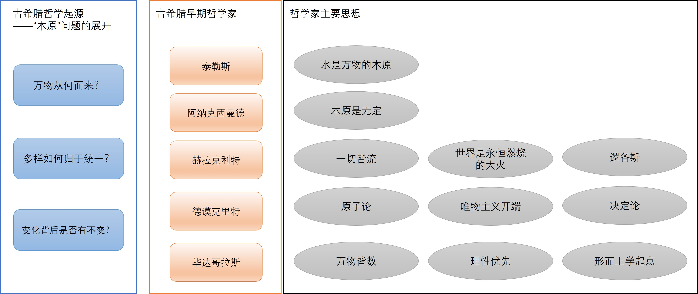
2 第二章：智者学派
在苏格拉底登场之前，古希腊哲学的主要关怀集中于对自然世界本原的探索。自泰勒斯以来的自然哲学家们，试图在纷繁复杂的现象背后寻找某种统一而恒定的根据，无论是“水”“气”，还是“原子”与“数”，都体现出一种共同的思想取向：即在变化之中把握不变，在多样之中寻求统一。然而，随着公元前5世纪雅典民主政治的发展，这一哲学取向逐渐发生了转变。城邦生活的核心不再只是对自然的理解，而是围绕公共事务展开的辩论、决策与说服。在这样的历史背景下，哲学的关注点开始从自然转向人自身，从宇宙秩序转向社会实践。
正是在这一语境中，一批被称为“智者”（Sophists）的思想家登上历史舞台。他们并不像早期哲学家那样隐居思考宇宙本原，而是以教师和演说家的身份活跃于城邦之间，向青年传授在政治与法律生活中取得成功所必需的能力。其中最核心的技艺，便是修辞术——即在公共场合中有效表达与说服他人的能力。智者学派的出现，标志着哲学第一次系统地与现实政治生活发生紧密联系，使哲学从纯粹的理论探索转向实践导向的知识形态。与此前哲学家试图发现“真理”不同，智者们更关心“如何在具体情境中使某种观点成立”。在他们看来，人类的判断并不依赖某种超越性的客观标准，而是取决于个人的经验、立场与利益。这一立场不仅改变了对知识与真理的理解，也动摇了传统道德与宗教观念的权威。通过对语言、论证与说服技巧的强调，智者学派揭示了一个重要事实：在公共生活中，真理往往并非通过发现而获得，而是在争论与交往中被建构出来。
智者学派既是一场思想运动，也是一场深刻的文化转型。它将哲学从对“世界本身”的追问，引向对“人如何理解世界”的反思；从对客观本原的探求，引向对主观经验与社会实践的关注。正是在这一转向中，西方哲学首次明确地面对认识论与价值论的问题，也由此引出了随后柏拉图与苏格拉底对真理、知识与道德的深刻回应。可以说，智者学派不仅标志着一个时代的结束，也为另一个时代的开启提供了必要的思想张力。
2.1 普罗泰戈拉：“人是万物的尺度”
作为智者学派最著名的代表之一，古希腊哲学家普罗泰戈拉提出了一个在西方思想史上具有转折意义的命题：“人是万物的尺度。” 这一看似简短的表述，实际上标志着哲学关注点的根本转移：从对世界本原的追问，转向对人自身的经验、判断与生活世界的反思。如果说早期自然哲学家试图在纷繁多样的现象背后寻找一个统一的客观原则，那么普罗泰戈拉则反其道而行之，将判断的标准从外在世界转移到主体本身。由此，哲学不再首先关心“世界本身是什么”，而开始关心“世界对人而言如何呈现”。这一转向，使得哲学第一次以系统方式进入认识论与价值论的问题领域。
2.1.1 核心思想：主观真理论
普罗泰戈拉思想的完整表述是：“人是万物的尺度，是存在者存在的尺度，也是不存在者不存在的尺度。” 这一命题的激进之处，在于它动摇了此前哲学赖以成立的一个基本前提，即存在某种独立于人的、普遍有效的客观真理。在他的思想中，真理不再是被发现的对象，而是与人的经验密切相关的结果。
首先，这一命题意味着一种真理的相对性。在不同的人、不同的情境中，同一事物可以呈现出完全不同的样貌，而这些差异并不能被归结为“谁对谁错”。例如，一阵风对于穿着厚衣的人来说是温暖的，而对于穿着单衣的人来说却是寒冷的。这里并不存在一个独立于经验的“真正温度”，所谓“冷”或“暖”，只是人与环境互动的结果。由此，真理不再具有普遍性，而是依赖于个体的处境与感受。其次，普罗泰戈拉将知识的来源归结为感觉经验。在他看来，人所能把握的世界，总是通过感官呈现出来的，而感官本身具有不稳定性与差异性。因此，知识并不是对某种客观实在的直接反映，而是对感觉经验的整理与表达。既然感觉是可变的，那么建立在感觉之上的知识也必然具有相对性。这一立场使得知识失去了绝对确定的基础，但同时也使其更加贴近现实生活中的实际经验。
更进一步来说，这一思想对传统形而上学构成了根本挑战。既然不存在一个独立于人的客观标准，那么早期哲学家关于“世界本原”的种种设想，无论是水、火、原子还是数，都失去了作为终极解释的地位。普罗泰戈拉实际上用一种“主观的逻各斯”取代了此前的“客观的逻各斯”：每个人都以自身的经验与判断作为尺度，而不再诉诸某种普遍的宇宙理性。在这一意义上，形而上学的基础被削弱，哲学的重心转向语言、说服与实践生活。
2.1.2 不可知论的宗教观
在对宗教问题的态度上，普罗泰戈拉同样表现出一种谨慎而激进的立场。他曾明确指出：“关于神，我不知道他们是否存在，也不知道他们像什么样子。” 这一表述是一种典型的不可知论立场：对于某些问题，人类既无法通过经验加以验证，也无法通过理性加以证明，因此应当承认自身认识的限度。
这一观点在当时的希腊社会具有极大的冲击力。宗教信仰不仅是个人精神生活的一部分，也是城邦政治与公共秩序的重要基础。对神的怀疑，实际上动摇了传统价值体系的权威。然而，普罗泰戈拉并未直接否定神的存在，而是指出：人类缺乏足够的认知条件去做出确定判断。问题的复杂性以及人生的有限性，使得关于神的知识始终处于不可确定的状态。从哲学意义上看，这种不可知论进一步强化了他的整体立场：既然连神的存在都无法被确证，那么更不应轻易断言存在某种绝对不变的真理或价值。人类所能依赖的，不是超越性的权威，而是自身的经验、判断与实践能力。由此，宗教问题也被纳入到人类认识能力的边界之内，而不再作为一个不可质疑的前提存在。
2.2 高尔吉亚：虚无主义与修辞的力量
如果说普罗泰戈拉动摇了客观真理的基础，那么另一位智者高尔吉亚则将这种怀疑推进到了更为激进的层面。他不再仅仅质疑真理的普遍性，而是通过一套精巧的论证，几乎彻底瓦解了“存在”“认识”与“语言”之间的联系，从而对整个哲学传统构成了根本挑战。
2.2.1 虚无主义三命题
高尔吉亚最著名的是其被后世概括为“虚无主义三命题”的思想体系。这三重论证并非单纯的形而上学断言，而更像是一场带有强烈修辞意味的哲学表演：他借用并反转巴门尼德等爱利亚学派关于“存在”的严格逻辑论证，通过层层推进的归谬推理，展示概念与语言自身的局限性。其真正目的，并不在于建立一个新的形而上学体系，而是在于揭示语言与说服可以独立于真理而运作。
第一命题是：无物存在（Nothing exists）。
高尔吉亚将“存在”置于一系列传统的哲学划分之中加以分析：它要么是无限的，要么是有限的；要么是一，要么是多。然而，这些看似穷尽一切可能的分类，在推演过程中却逐一陷入矛盾。若存在是无限的，它便无所不包、无处可在，从而失去任何确定性，近似于“无”；若是有限的，则必须以“非存在”为边界，而用“非存在”界定“存在”本身便已陷入矛盾；若存在是一，则无法具有结构与差异，否则便不再是绝对的一；若是多，则必须依赖“非一”来区分个体，而这种区分同样诉诸否定性概念。由此，高尔吉亚得出一个挑衅性的结论：在既有概念框架中，“存在”这一概念本身并不能被自洽地确立。这一论证并非简单否认存在，而是在展示：概念体系本身可能无法承载其所欲表达的对象。
第二命题是：即便有物存在，人也无法认识它（If anything did exist, it could not be known）。
在这一层论证中，高尔吉亚将问题转向认识的可能性。他指出，所谓“认识”，本质上是主体内部的心理状态，是感觉、表象与思维的产物；而若存在某种客观对象，它则独立于这些心理状态而存在。两者在本体上并不相同。更重要的是，人们的感觉经验具有明显的差异性与可变性：同一事物在不同主体、不同情境下呈现出不同的样貌。这说明我们所把握的，并非对象本身，而只是对象对主体的呈现方式。若要使“知识”与“对象”完全一致，则必须实现主体与客体的同一，这在原则上是不可能的。因此，人类的认识始终停留在表象层面，而无法抵达事物本身。这一思想在结构上预示了后世对“现象”与“物自身”区分的认识论传统。
第三命题是：即便可以被认识，也无法传达给他人（If it could be known, it could not be communicated）。
高尔吉亚进一步指出，即使某种知识在个体心中成立，它也无法被完整地传递给他人。因为语言只是由声音与符号构成，它并不等同于事物本身，也不等同于说话者的内在经验。当一个人使用语言表达其所见所感时，听者接收到的只是符号，并根据自身经验进行理解。因此，交流并不能实现“同一经验”的传递，而只能引发某种相似或类比的心象。由此，在“事物—观念—语言”之间形成了不可弥合的断裂：语言不再是通向真理的透明媒介，而是一种独立运作的符号系统。
通过这三重论证，高尔吉亚不仅削弱了“存在”的确定性，也瓦解了“认识”的可靠性与“语言”的透明性，将怀疑论推进到极端，同时也是一种对哲学传统根基的深刻反思。
2.2.2 修辞术的魔力：《海伦颂》
然而，高尔吉亚的真正目的并不在于建立一套否定性的哲学体系，而在于展示修辞术本身的力量。在他看来，既然语言无法保证与真理的一致性，那么语言的价值便不在于揭示真理，而在于其说服与影响他人的能力。语言并非被动的表达工具，而是一种能够塑造现实、改变判断、操控情感的力量。
这一思想在高尔吉亚的代表作《海伦颂》中得到了生动体现。在公元前5世纪的雅典，民主政治要求公民直接参与法庭辩论与公共决策，说服他人成为政治成功的关键能力。在这样的语境中，修辞术不再只是语言技巧，而是一种能够左右舆论、影响判决甚至塑造历史叙事的力量。高尔吉亚正是在这一背景下，通过演说实践展示修辞的极限能力。《海伦颂》可以被理解为一篇“示范性演说”，其目的不仅在于为某一人物辩护，更在于展示：在适当的论证与语言结构之下，几乎任何立场都可以被合理化。
在具体内容上，高尔吉亚选择了一个具有强烈文化象征意义的对象：特洛伊战争中的海伦。在传统叙事中，海伦被视为特洛伊战争的直接导火索，是“红颜祸水”的典型形象，承担着明显而集中的道德谴责。根据荷马史诗及其后续神话传统，海伦原为斯巴达国王墨涅拉俄斯之妻，却随特洛伊王子帕里斯离去，由此引发希腊诸城邦联合远征特洛伊的十年战争。在这一叙事框架中，战争的复杂政治背景与权力博弈被简化为一个以女性欲望与背叛为核心的故事结构，海伦因此被塑造成灾难的源头，其形象长期与诱惑、背德与毁灭联系在一起。通过对这一既定形象的反转，高尔吉亚实际上是在挑战公共舆论的稳定性。他通过一系列逻辑严密且极具修辞感染力的论证指出：如果海伦的行为出于神的安排，则人类无权指责；如果她是被武力劫持，则她只是受害者；如果是出于爱情，则她受到某种不可抗拒的力量支配；如果是被言语说服，那么责任在于说服者而非被说服者。无论哪种情况，海伦都不应承担道德责任。这一层层推进的论证，并不只是为了得出一个结论，而是在不断重构评价的标准：从神意、暴力、情感到语言，高尔吉亚将责任的归属不断外移，使原本被视为“罪责主体”的海伦逐渐转化为“受作用的对象”。在这一过程中，他特别强调了语言的作用：言语能够像药物一样作用于灵魂，使人产生情感波动，改变判断，甚至违背自身意志而行动。语言不再是中性的表达工具，而是一种具有实际效力的力量，它能够塑造信念、重构现实、引导行为。
《海伦颂》的真正意义，并不在于它是否成功为海伦“洗脱罪名”，而在于它通过一次成功的修辞实践，揭示了一个深刻的思想转变：在公共生活中，人们所接受的“真理”往往并非客观事实本身，而是通过语言建构出来的结果。说服的有效性，并不取决于其是否符合某种绝对真理，而取决于其是否能够在特定语境中产生影响。在这一意义上，高尔吉亚不仅展示了修辞术的技巧，更揭示了语言、权力与真理之间复杂而深刻的关系，为后世关于话语与现实建构的理论提供了重要启示。
2.3 自然与习俗之辩
智者学派引发的最深刻的讨论之一，是关于“自然”（physis）与“习俗”（nomos）之间关系的系统反思。这一问题之所以重要，在于它直接触及了一个根本性的哲学与政治问题：人类社会的规范，究竟源于世界本身的秩序，还是源于人类自身的约定？
在这一对立中，“自然”指的是事物固有的、本然的存在方式，是不依赖人类意志而成立的，它具有某种普遍性与恒常性；而“习俗”则指人类在历史过程中逐渐形成的法律、道德与制度安排，这些规范依赖于约定与共识，因而具有可变性与相对性。智者们的关键洞见在于：人类社会中被视为“理所当然”的许多规则，并不具有自然基础，而只是习俗的产物。历史上存在大量例子可以强化这一判断。例如，在雅典城邦中，偷窃被视为严重的道德罪行，而在斯巴达的教育体系中，少年被鼓励通过“潜取”来培养机敏与勇气，真正受到惩罚的不是偷窃行为本身，而是“被发现”的无能。又如，在葬俗方面，荷马时代的英雄以火葬为荣，而后来的城邦社会则普遍采用土葬并以墓志铭纪念逝者。此外，在婚姻与亲属制度上，不同文化之间的差异更为显著：雅典通过法律严格界定公民身份，强调婚姻的合法性与血统纯粹性，而在其他社会中，堂表亲婚不仅被接受，甚至被视为巩固家族关系的重要方式。这些差异表明，道德与法律并非源自某种统一的自然秩序，而是随社会条件与文化传统而变化的。
正是在这一基础上，智者学派提出了一个具有颠覆性的结论：社会规范并不具有天然的正当性，它们只是人类为了维持秩序而构建的制度性安排。由此，传统上被视为“神圣”的法律与道德，其权威开始受到质疑。如果规范只是约定，那么它们是否必须被遵守？如果可以被改变，那么改变的依据又是什么？这一问题的进一步发展，导向了一种更为激进的政治含义。在特拉西马库斯等人的观点中，所谓“正义”，不过是统治者为维护自身利益而制定的规则。法律并非体现普遍善，而是体现权力关系。弱者遵守法律，是因为他们缺乏反抗的能力；而强者若能够超越这些约定，则可以按照“自然”的法则行事。在这一意义上，“自然”不再指普遍理性秩序，而被理解为一种力量结构，即强者支配弱者的现实状态。
“自然与习俗之辩”不仅是一个概念上的区分，更是一场关于规范根源与权威基础的深刻争论。它揭示了一个关键张力：一方面，人类社会需要规范来维持秩序；另一方面，这些规范本身却缺乏绝对根据。这一张力为后来的哲学发展提供了重要动力。正是在回应这一问题的过程中，苏格拉底与柏拉图试图重新确立“正义”与“善”的客观基础，从而将哲学从相对主义与怀疑主义的边缘重新引向对普遍真理的追问。
2.4 智者学派的遗产与争议
2.4.1 历史贡献
尽管在后世评价中长期处于争议之中，智者学派对西方思想传统的推动作用却具有奠基性意义。首先，他们完成了一次深刻的人本主义转向。与早期自然哲学家专注于宇宙本原不同，智者们将哲学的中心引向人自身及其生活世界，开始系统讨论语言、法律、政治与道德等问题。哲学由此不再只是对“世界是什么”的追问，也成为对“人如何生活”的反思，这一转向为后来的伦理学与政治哲学奠定了基本方向。其次，智者学派在方法论上倡导了一种鲜明的批判精神。他们不再无条件接受传统权威，而是通过辩论与反诘不断检验既有观念的合理性。所谓“反诘法”，即对任何命题都能够提出相反论证的能力，实际上是一种训练思维弹性与论证能力的工具。通过这种方式，智者们揭示了观念的相对性与可争辩性，使人们意识到：许多被视为理所当然的判断，其实建立在特定立场与条件之上。这种对既定观念的松动，成为西方理性传统中怀疑与反思精神的重要源头。再次，智者学派推动了教育形态的转变。他们作为最早的职业教师，在城邦之间巡回授课，将知识从贵族或宗教垄断中解放出来，使教育逐渐走向世俗化与公共化。他们教授的不仅是知识本身，更是参与公共生活所必需的能力，如演说、论证与说服。这种以实践能力为导向的教育模式，使哲学首次与现实政治生活紧密结合，也为后来西方教育传统的发展提供了重要范式。
2.4.2 饱受争议的缘由
然而，从柏拉图与亚里士多德开始，智者学派便长期伴随着负面评价。这种批评是源于他们在若干关键问题上的立场，与后来的哲学传统发生了根本冲突。
首先，智者们收费教学成为争议的焦点之一。在苏格拉底等人看来，哲学追求的是关于真理与善的知识，这种知识具有内在价值，不应被当作谋利的手段。而智者以教授修辞与辩论技巧为业，并向学生收取报酬，这在批评者看来意味着将知识转化为可以交易的商品，从而削弱了哲学的严肃性与神圣性。因此，他们被指责为将智慧“工具化”，甚至被形容为在思想领域进行“交易”的人。其次，智者学派所表现出的道德相对主义倾向，被认为会动摇社会秩序的基础。如果真理与正义都取决于个人或群体的立场，而不存在普遍有效的标准，那么法律与道德便失去了稳定的依据。在柏拉图看来，这种立场容易导致政治生活中的机会主义，使强者能够通过操控舆论与话语，合法化自身的利益，从而侵蚀公共生活中的正义原则。再次，智者们对修辞术的强调也引发了广泛批评。由于他们关注的是如何在具体情境中取得说服效果，而非探求论证本身是否真实，这使他们常被指责为“诡辩家”。在批评者看来，若语言可以脱离真理而独立运作，那么辩论的胜负便不再取决于事实，而取决于技巧与策略，这将导致真理在公共讨论中被边缘化。
总的来说，智者学派像一场席卷古希腊思想世界的风暴。他们提出了一系列尖锐而颠覆性的问题：例如真理是否具有客观性、道德是否源于自然还是习俗。正是在对这些挑战的回应中，苏格拉底、柏拉图以及亚里士多德重新尝试为真理、知识与正义确立稳定的基础。可以说，智者学派虽然自身并未建立一个持久的哲学体系，但正是通过其激进的怀疑与批判，推动了西方哲学后世更高层次的发展。
2.5 章节小结
本章以智者学派的思想为主线，呈现出古希腊哲学由“自然本原”转向“人类世界”的关键历史转折。在这一转向中，哲学不再主要关心宇宙的构成与起源，而是开始系统反思人如何认识世界、如何在社会中行动以及如何确立价值标准。作为最早的职业教师，智者们将修辞术与公共生活紧密结合，使哲学第一次深度嵌入政治与社会实践之中，也由此开启了对语言、真理与权力关系的持续讨论。
普罗泰戈拉以“人是万物的尺度”这一命题，将判断的标准从客观世界转移到主体经验之中，奠定了主观真理论与不可知论的基本立场，从根本上动摇了传统哲学对客观真理的信念。高尔吉亚则进一步推进这一思路，通过“无物存在、即便存在也不可知、即便可知也不可传”的三重论证，揭示存在、认识与语言之间的断裂关系，并在《海伦颂》中以修辞实践表明：说服的有效性可以独立于真理而运作，从而将哲学问题引向语言与表达的层面。围绕“自然”与“习俗”的对立，智者们对法律与道德的根基提出了系统质疑。他们指出，社会规范并非源于某种普遍自然秩序，而是历史条件与人类约定的产物。这一立场不仅揭示了规范的相对性与可变性，也引发了关于正义是否具有客观基础以及权力如何塑造规范的深刻争论。在某些极端表达中，这种思路甚至导向“强者即正义”的结论，使哲学首次直面权力与道德之间的紧张关系。
智者学派的思想遗产具有双重意义。一方面，他们完成了哲学的人本主义转向，确立了以人及其经验为中心的问题意识；他们所倡导的辩证反诘方法，培养了对权威与传统的批判精神，并推动教育从贵族与宗教控制中走向世俗化与专业化。另一方面，他们的立场也引发持续争议：他们的收费教学被批评为知识的商品化，道德相对主义被视为削弱社会规范的稳定基础，而对修辞的强调则使他们常被指责为“诡辩家”。
总体而言，智者学派并未建立一个稳定的哲学体系，但他们通过怀疑、修辞与人本主义，重塑了哲学的问题框架。他们所提出的关键问题：真理是否客观、知识是否可靠、道德是否具有普遍根据迫使苏格拉底、柏拉图等后继思想家作出回应。正是在这一回应过程中，西方哲学进入了一个新的发展阶段，其核心议题也由此获得了更为深刻与系统的展开。
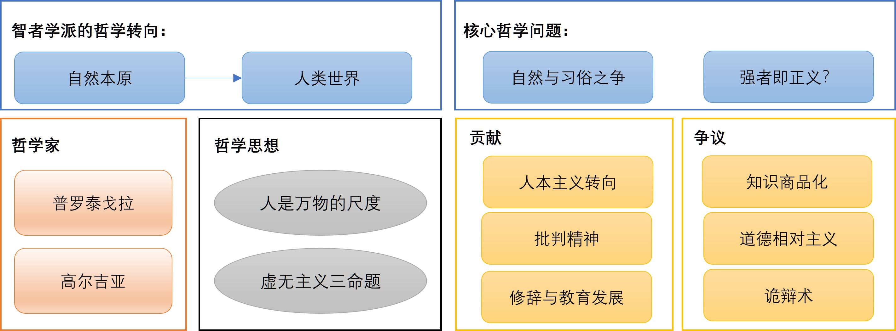
3 第三章：苏格拉底
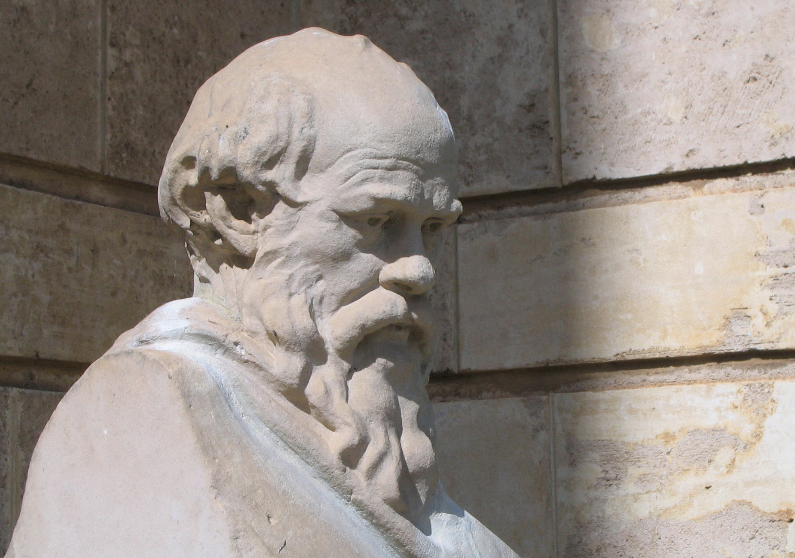
在智者学派盛行的时代，古希腊思想正经历一场深刻的转变。真理被相对化，语言被工具化，修辞术成为通往政治成功的关键技艺。在这样的语境中，哲学似乎逐渐滑向一种以“说服”为目的、而非以“求真”为目标的实践。然而，正是在这一背景下，一位与时代风气格格不入的人物出现在雅典的公共空间之中。他没有华丽的辞藻，不收取学费，也不承诺教授成功的技巧，却不断追问最基本的问题：什么是正义？什么是善？人应当如何生活？
这个人便是苏格拉底。
与智者们四处游历、以教学为业不同，苏格拉底终其一生都留在雅典。他的活动场所不是学园或讲堂，而是市集、广场与体育场等公共空间。他的哲学不通过著作保存，而是存在于一次次具体的对话之中。正因如此，他没有留下任何文字，他的思想主要通过其弟子（尤其是柏拉图）的记述得以流传。某种意义上，苏格拉底的哲学并不是一套完成的理论体系，而是一种持续进行的实践，是一种在对话中展开、在生活中体现的思考方式。从外在形象看，苏格拉底与传统意义上的“智者”截然不同。据记载，他相貌丑陋，衣着简朴，常年赤足行走，对物质生活几乎毫无需求。然而，正是在这样一具平凡甚至略显粗陋的身体之中，蕴含着一种极为坚定的理性精神。他既不追求财富，也不追求权力，而是将全部精力投入到对“如何生活”的追问之中。
苏格拉底哲学的核心，可以概括为一种根本性的转向：哲学的对象不再是宇宙的本原，而是人自身的灵魂与德性。如果说此前的自然哲学家关注的是“世界由什么构成”，那么苏格拉底则转而追问“人应当成为什么样的人”。这一转向通常被称为西方哲学史上的“伦理转向”。在这一转向中，哲学第一次明确地将“善”“正义”“德性”等问题置于中心位置，并将对这些问题的探讨与个体的生活方式紧密结合起来。在苏格拉底看来，未经反思的生活是不值得过的。人如果只是依赖习俗、权威或未经检验的意见来生活，那么即使他在外在上取得成功，也仍然处于一种精神上的盲目状态。因此，哲学的任务并不是提供现成的答案，而是通过持续的反思，使人认识到自身的无知，从而开启对真正知识的追求。正是在这一意义上，苏格拉底将哲学理解为一种关乎灵魂的实践，一种通过理性审视自身而不断提升自我的过程。这一立场不仅使他与智者学派形成鲜明对立，也为后来的柏拉图和整个西方形而上学传统奠定了基础。哲学从此不再只是关于世界的知识体系，而成为一种关于“如何生活”的根本追问。在苏格拉底这里，哲学与伦理、知识与德性、思考与生活，第一次被紧密地统一在一起。
3.1 苏格拉底方法：思想的“助产术”
苏格拉底自称其哲学方法为“助产术”（Maieutics），这一比喻深具哲学意味。他的母亲是一位助产士，而他则将自己的思想实践理解为一种精神层面的“接生”。在他看来，真正的知识并不是可以从外部灌输给人的某种对象，而是早已以潜在形式存在于人的灵魂之中。因此，哲学的任务并非“教导”，而是“引出”；并非给予，而是唤醒。正如助产士并不创造生命，而只是帮助生命顺利诞生，苏格拉底也并不自称拥有真理，而是通过对话帮助他人将自身内在的理性潜能转化为清晰的认识。
他的对话通常以一种独特的“反讽”（eironeia）方式展开。苏格拉底往往以谦逊甚至自贬的姿态出现，声称自己一无所知，请教对方某个看似简单的问题，例如“什么是正义？”、“什么是美德？”或“什么是勇敢？”。这种姿态是一种策略性的引导：它使对话者放下戒备，自信地给出定义，从而将其原本未经反思的观念暴露出来。在这一阶段，苏格拉底实际上是在为接下来的哲学审查铺设条件。一旦对方给出某种定义，苏格拉底便进入其方法的核心环节，即“诘问法”（elenchus）。他通过一连串紧密相扣的问题，对对方的回答进行逐步检验。这些问题往往从对方已承认的前提出发，在逻辑上层层推进，最终揭示出其定义内部的矛盾或不足。例如，一个人可能将“勇敢”定义为“在战场上不退缩”，但在苏格拉底的追问下，他可能不得不承认，有些不退缩的行为实际上是鲁莽甚至愚蠢的，从而使原有定义失效。在这样的推理过程中，对话者逐渐发现，自己原以为清楚的概念其实并不稳固，甚至充满混乱。这种不断逼近矛盾的过程，最终会使对话者陷入一种被称为“困境”（aporia）的状态。在这一状态中，人既无法坚持原有观点，又尚未获得新的确定知识，处于一种思想上的悬置与不安之中。对于苏格拉底而言，这一结果并非失败，反而是哲学的真正起点。因为只有当人意识到自身的无知时，才有可能真正开始追求知识。正如他那句著名的断言：“我知道我一无所知”，所表达的并不是消极的怀疑，而是一种对知识条件的深刻反思。
苏格拉底方法的根本目的，并不在于提供现成答案，而在于通过理性的对话清除错误信念，使灵魂从未经检验的意见（doxa）中解放出来，转向对真正知识（episteme）的追求。这一过程既是一种认识论的净化，也是一种伦理上的自我修养。正是在这一意义上，苏格拉底将自己比作“雅典的牛虻”：他不断“叮咬”城邦中的人们，使他们无法安于无知的沉睡，而被迫反思自身的生活与信念。哲学在这里不再是关于宇宙本原的抽象思辨，而成为一种面向自我、关乎灵魂的实践活动。
3.2 “认识你自己”：关照你的灵魂
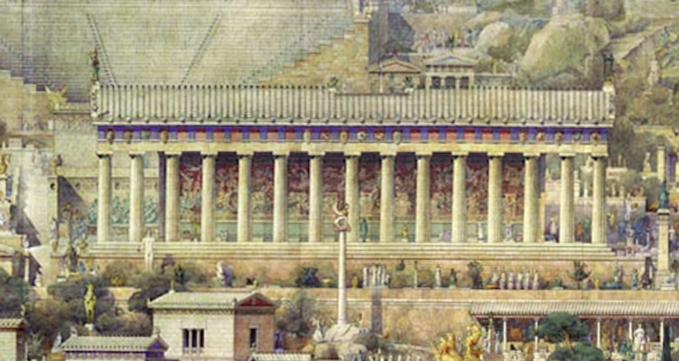
“认识你自己”这一格言最初铭刻于德尔菲神庙，其原本语境或许带有宗教与伦理上的警示意味，但在苏格拉底那里，它被赋予了深刻的哲学含义，并成为其全部思想实践的核心纲领。这一命题代表着一项贯穿整个人生的理性任务：通过持续的省察，辨明“我是谁”“我应当如何生活”，以及“我在与他人、城邦与神圣秩序中的位置”。在这一意义上，“认识你自己”并不是知识的起点，而是哲学作为一种生活方式的根本要求。
3.2.1 德尔斐神谕与无知的智慧
苏格拉底的朋友卡瑞丰自德尔斐神庙求得神谕，称“没有比苏格拉底更智慧的人了”。苏格拉底困惑不已，因为他坚信自己“一无所知”。
为验证神谕的真意，苏格拉底首先将目光投向城邦中最具声望与影响力的群体：政治家。在雅典民主政治中，这些人不仅掌握着公共事务的决策权，也自认为最有资格谈论“正义”“勇敢”“节制”等关乎公共生活的核心德性。他们习惯于在集会与法庭上发言，精通修辞，能够把握听众的情绪与舆论的走向，因此往往将这种实践能力误认为对德性的真正理解。当苏格拉底以一名求教者的姿态向他们询问这些概念的定义时，对方通常会给出看似明确而自信的回答，例如将正义理解为“帮助朋友、伤害敌人”，将勇敢理解为“无所畏惧”。然而，苏格拉底的诘问很快揭示出这些定义的脆弱性。他并不直接反驳，而是顺着对方的说法提出进一步的问题：如果朋友并不总是正义的，而敌人也可能行善，那么是否仍然应当无条件地偏袒与打击？如果“勇敢”被定义为“无所畏惧”，那么对愚行与羞耻也毫无畏惧的人，是否同样应被称为勇敢？在这一连串问题的推动下，对方逐渐发现，原本看似清晰的定义在不同情境中难以成立，要么需要不断修补，要么陷入自我矛盾。原本依赖直觉与习俗的判断，在理性的检验之下显得摇摆不定。苏格拉底发现，政治家的确在处理具体事务方面具有经验与技巧，能够在复杂情境中作出决策、达成目标，但这种能力更多属于“如何成功地行动”的技艺，而非“何为善、何为正当”的知识。他们所掌握的是“成事之术”，而不是能够为行动提供正当根据的理性尺度。换言之，他们能够在既定的价值框架中有效运作，却无法说明这一框架本身为何成立。
苏格拉底随后将考察的对象转向诗人。在雅典的公共生活中，诗人在祭礼与竞赛中吟诵史诗与抒情诗，语言华美，节奏有力，能够唤起听众强烈的情感共鸣，甚至在某种意义上承担着教育城邦的功能。因此，在常人的眼中，诗人不仅是技艺高超的创作者，也似乎理应是关于“美”“高贵”“德性”的权威解释者。然而，当苏格拉底将他们从表演的情境中抽离出来，转入理性的对话场域时，问题便逐渐显现。他并不否认诗歌的感染力，而是要求诗人说明其创作的根据：为什么这一句是恰当的？为什么这一表达优于另一种表达？当问题从“如何呈现”转向“为何如此”，诗人往往难以作答。他们能够复述诗句、转换修辞，却无法给出可被普遍理解和检验的理由。面对进一步追问，诗人常常诉诸“灵感”或“神授”，将创作解释为某种超越理性的力量的产物，而非基于可传授的规则与方法。在此基础上，苏格拉底作出了一项关键区分：一方面是“被灵感牵引的创作”，另一方面是“具有规则与程序的技艺”。真正的技艺应当像木工、医术那样，拥有明确的对象、步骤与成败标准，能够被学习、教授并加以检验。如果诗歌属于技艺，那么诗人理应能够说明其创作的原则；而如果连创作者本人都无法解释其所以然，那么诗歌的成功便更接近一种偶然的启示，而非知识的体现。换言之，诗歌或许能够打动人，却未必建立在对其对象的理性把握之上。
当苏格拉底将问题从具体作品提升到普遍概念的层面时，这一困境变得更加明显。他要求诗人给出“美”或“高贵”的一般性定义，而非列举具体实例。诗人起初往往通过罗列例子来回应，例如英雄的牺牲、庄严的仪式、优美的雕像或和谐的旋律。然而，这种回答无法满足苏格拉底的要求，因为它缺乏一个能够贯穿所有实例并排除反例的共同本质。于是，苏格拉底通过不断变换语境与提出反例，推动对方检验其定义的稳定性：器物之美、身体之美与灵魂之美是否遵循同一标准？如果“高贵”等同于勇敢，那么无知而鲁莽的行为是否也应被赞许？如果引入“理性”的条件，又如何理解克制与退让所体现的高贵？在这一系列跨领域的比较与反例之下，诗人的回答逐渐失去一致性：要么退回到对具体事例的罗列，要么在逻辑上自相冲突。由此，苏格拉底得出结论：诗人确实能够创作出动人的作品，但他们并不真正掌握支撑这些作品的普遍理由。他们能够“做出”某种效果，却无法“说明”为何如此。这种创作更像是一种由“缪斯”引导的链条反应，而非建立在可传授、可检验的知识之上。正因为如此，当诗人超出其创作领域，开始谈论城邦事务、德性或正义时，便容易将艺术上的声望误认为普遍的智慧。他们在诗歌中所获得的权威，被不加区分地延伸至伦理与政治判断之中。苏格拉底的诘问揭示了这一跨领域推断的缺陷：在一个领域中的卓越，并不自动转化为对整体生活的理解；没有经过理性检验的表达，即使动人，也未必构成知识。
苏格拉底最后将考察的对象转向各类工匠。在雅典社会中，工匠的地位虽不如政治家与诗人显赫，但他们在各自领域中所掌握的知识却更为稳固而具体。木匠熟悉材料的受力与结构，通过榫卯与比例使建筑稳固；铁匠把握火候与锻造节奏，能够在加热与淬火之间调控金属的性质；医者则凭借对体质与症候的理解，运用方药与调养恢复身体的平衡。这些技艺具有明确的对象与操作规范，其成败可以通过实践加以检验，因此在苏格拉底看来，它们构成了一种真正意义上的“知识”：即关于“如何做得好”的确定把握。然而，当对话从“如何做好某件事”转向“何为真正的好”时，问题便随之出现。许多工匠在离开自身专业领域之后，往往不自觉地将其技艺中的标准扩展为普遍的价值尺度。木匠将“笔直”“对称”视为一切美的根本，并据此设想城邦应当以绝对的整齐划一为善；铁匠推崇“坚硬”“耐久”，进而将这些性质理解为人格的最高德性，主张人在面对变化时应当一味坚持与忍耐；医者则以“平衡”“适度”为最高原则，将其推广到政治领域，认为任何剧烈的变革都如同对身体的损伤，应当尽量避免。
面对这些由专业经验外推而来的普遍判断，苏格拉底并不直接否定，而是通过反例与情境转换加以检验。他指出，如果“笔直”即为美，那么为何曲线的琴身与拱券的桥梁反而更具承重能力与共鸣效果？如果“坚硬”即为德，那么为何柔韧的材料在面对冲击时更不易断裂？如果“适度”即为最高原则，那么在疾病暴发之际，为何强力而迅速的干预反而成为拯救生命的必要手段？通过这样的追问，工匠们逐渐意识到，其专业领域中的判断标准并不能无条件地适用于所有情境，更无法直接转化为关于“善”的普遍定义。当苏格拉底进一步要求给出一个在不同情境中都不自相矛盾的“善”的定义时，问题愈发明显。工匠们的回答往往停留在经验类比或隐喻层面，缺乏从具体技艺到普遍价值之间的论证桥梁。一旦这些类比被置于不同情境之中加以检验，便迅速显露出其局限性。由此可见，他们的判断虽然在专业范围内有效，却无法承担起普遍规范的角色，其所谓的“智慧”，不过是将局部经验不加反思地推广至整体世界。在这一诘问过程中，苏格拉底提出了一个关键区分：所谓“技艺之知”（知道如何），与“德性之智”（知道为何）是两种不同层次的知识。前者指向具体对象与操作手段，具有可传授性与可验证性；后者则关乎目的与尺度，要求能够说明行为为何正当、何以为善，并经得起理性对话的检验。工匠的专业知识并不低下，但它仅限于特定领域，并不能自动转化为对正义、幸福或最优政制的理解。通过对工匠的考察，苏格拉底进一步揭示了一个重要问题：从“如何做”到“为何如此”之间存在着一条难以跨越的鸿沟。如果缺乏清晰的概念与稳固的理由支撑，那么所谓的专业自信，很容易沦为一种跨领域推断的幻觉。
经过一系列的诘问，苏格拉底逐渐明白：政治家的成功并不等同于对德性的洞见，诗人的灵感并不等同于可说明、可传授的知识，工匠的熟练也并不等同于关于整体生活的普遍智慧。不同领域中的卓越能力，并不能自动转化为对“善”的理解；在缺乏反思与论证的情况下，这些能力反而容易被误认为普遍真理。正是在这一比较与检验之中，苏格拉底领悟到自身所谓“较诸人更智慧”的真正含义：并非他掌握了更多知识，而在于他始终不以局部之能冒充关于善的学问，不将未经检验的意见当作可靠的认识。由此，苏格拉底进一步确立了一种独特的智慧观。若说他比他人“更智慧”，仅仅在于他清楚地知道自己的无知。这种“自知不知”，并不是对知识的否定，而是一种对知识条件的严格要求。它意味着不轻易断言、不仓促下结论，而是在持续的诘问与反思中检验一切信念。苏格拉底既不把个人经验当作普遍尺度，也不将社会习俗视为善的最终根据，更不让语言与修辞所塑造的意见取代真正的知识。
总的来说，这种“无知的智慧”并不是消极的怀疑或虚无，而是一种方法论上的谦卑与求真态度。首先，它体现为对自身认识限度的承认：概念往往含混，判断常受偏见影响，唯有通过不断澄清与修正，才能逐渐逼近清晰的理解。其次，它依赖于对话而非独断：通过与他人的理性讨论，使观点在公共检验中接受挑战，而不是依赖权威、情绪或习俗的压力来确立真理。最后，它体现出一种明确的伦理优先性：与其沉迷于对自然奥秘的追逐，不如首先澄清“何为善的生活”，因为只有在这一问题上获得某种程度的清晰，人类的行动才可能具有真正的方向与意义。
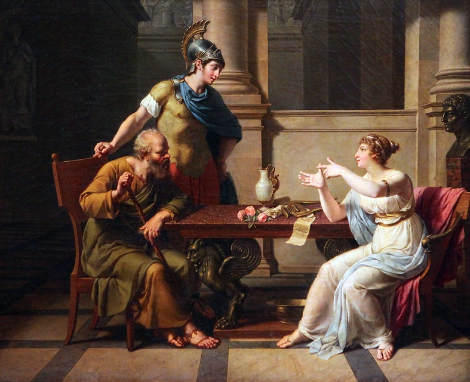
3.2.2 “未经省察的人生不值得过”
“未经省察的人生不值得过”，是苏格拉底留下的最具震撼力的宣言之一。在苏格拉底看来，人之所以为人，并不在于其生存本能或社会地位，而在于其具备反思自身的能力。一个从不检视自身信念、动机与行为理由的生命，即使在外在上充满成就与满足，在本质上却仍然停留在未经觉醒的状态之中。理性并非附加于生命的装饰，而是赋予生命以意义与尊严的根本条件。苏格拉底提出的所谓“省察”，并不是简单的内心反思或情绪体验，而是一种具有明确结构的理性活动。首先，它意味着对生活目标的澄清：人必须追问自己究竟在追求什么，包括那些被我们习惯性接受的目标，例如财富、荣誉、权力或快乐，是否真正构成“善”并且值得追求。其次，它要求对既有信念进行检验：我们所遵循的规范与判断，是否能够经受反例的挑战与逻辑的推敲，还是仅仅建立在习俗、权威或未经反思的意见之上。最后，它要求行动与认识之间的一致性：当一个人已经在理性上承认某种善时，他是否在实践中真正按照这一认识行事，还是在欲望与压力之下偏离了自身的判断。苏格拉底认为，“省察”不仅是认知活动，更是一种伦理实践。它不同于孤立于他人的私密内省，而是在对话与公共讨论中不断展开。通过与他人的理性交流，个体的观点得以暴露、修正与澄清，灵魂也在这一过程中逐渐摆脱对“意见”（doxa）的依赖，迈向对“知识”（epistēmē）的追求。同时，人的行动不再只是对欲望的被动回应，而开始在理性的引导下获得方向与节制。
“认识你自己”不仅仅是一个抽象的格言，而更是一种具体的生活方式。它要求人不断回到自身，通过省察关照灵魂，使生活不仅是被经历的过程，更是被理解与塑造的过程。而哲学也由此不再是远离生活的思辨活动，而成为一种贯穿日常实践的存在方式：在不断的反思与对话中，人逐渐成为其自身。通过持续的“省察”，灵魂由“意见”趋向“知识”，由“随欲而动”转向“理性引导”，“认识你自己”遂成为“关照你的灵魂”。
3.3 “德性即知识”：伦理学的理性基石
苏格拉底伦理思想的核心命题可以用“德性即知识”来概括。它标志着西方伦理学从传统习俗与权威规范，转向以理性论证为基础的根本转变。在苏格拉底看来，道德并非依赖血统、传统或神意的外在规定，而是一种可以通过理性加以理解、澄清并在实践中加以贯彻的知识形态。由此，伦理问题不再只是“应当如何做”的劝诫，而成为“何为善、为何如此”的理性探究。
3.3.1 知道善，就会行善
在苏格拉底这里，“德性”并不是一种模糊的品格或习惯，而是一种能够说明理由的“知识”。这种“知识”类似于“技艺”，具有结构性与可检验性：它不仅告诉我们“什么是善”，还能够说明“为什么这是善”，并在不同情境中保持一致性。
苏格拉底认为，这种“知道”并非表面的认同或口头上的承认，而是一种深入灵魂的理解。当一个人真正理解了善的本质，他的行动便会自然趋向于善，因为理性认识本身具有方向性与规范性。换言之，知识并不是中性的，它本身就具有引导行为的力量。正如真正懂医术的人不会故意伤害病人，真正理解正义的人也不会主动选择不义。理性并不仅仅是冷静的判断工具，它本身就会重塑人的动机。当灵魂看清何为真正有益、何为真正值得追求时，它便会自然趋向于这一对象，就像眼睛一旦看见光，就无法再把黑暗当作光明。因此，在苏格拉底看来，道德失败并不是“意志薄弱”，而是认识不足。人之所以偏离善，并非因为他明知善而故意拒绝，而是因为他并未真正理解善。
3.3.2 无人故意作恶
由“德性即知识”的前提出发，苏格拉底提出了一个极具震撼力的结论：“无人故意作恶”。这一命题对人“作恶的原因”作出一种根本性的重释：恶并非出于意志的主动选择，而源于认识的错误。
首先，苏格拉底将一切行动理解为对“善”的追求。无论是追逐财富、权力，还是沉溺享乐，人们在主观上都认为自己是在选择某种“对自己有利的东西”。因此，即便行为在客观上是恶的，其主观动机依然指向“善”，只是这种“善”是被误解、被扭曲的。例如，一个人为了利益而欺骗他人，并非在追求“恶”，而是在错误地把短期利益当作真正的好，而没有看到这种行为对人格、关系乃至整体人生的破坏。由此，所谓“作恶”，实际上是对善的误判。这种误判可能源于多种因素：情绪的干扰、欲望的诱导、社会习俗的误导，或是对后果的短视。人们往往被眼前的快感或利益所吸引，却缺乏对长远后果的清晰衡量。在这种情况下，选择看似“主动”，实则建立在错误的认知之上。其次，苏格拉底对“知而不行”的常识性看法提出了挑战。在日常理解中，人们常说“我明知道这样不好，但还是做了”，似乎表明知识与行动可以分离。然而，在苏格拉底看来，这种说法本身就是一种误解。他认为，如果一个人真正知道某种行为是恶的，那么这种认识必然会转化为行动；如果没有转化，说明这种“知道”只是表面的意见，而非经过理性澄清的真正知识。例如，一个人可能口头承认“健康重要”，却依然放纵饮食；在苏格拉底看来，这并不说明他真正理解了健康的价值，而是说明他的认识仍停留在表面，尚未转化为对整体生活的清晰把握。所谓的“知而不行”并不是意志的软弱，而是认知的虚假性。所谓的“知道”，如果无法在具体行动中发挥作用，就不配称为知识，而只是未经检验的信念或习惯性的说法。在《普罗泰戈拉》中，苏格拉底进一步将道德选择理解为一种“度量术”。人在面对不同选项时，本质上是在比较各种利害关系：眼前与长远、身体的快感与灵魂的善、局部利益与整体幸福。如果一个人具备真正的“度量能力”，能够准确衡量这些因素，他就不会做出错误选择。反之，一旦选择错误，便说明他在“度量”上发生了偏差。
基于上述的原因，苏格拉底对“惩罚”的意义也作出了根本性调整。如果作恶源于无知，那么单纯的惩罚并不能真正解决问题，因为它并没有纠正认知本身。真正有效的方式，应当是通过教育与省察，帮助人们看清何为真正的善，从而在判断层面进行纠偏。这也意味着，道德改进的核心不在于外在约束，而在于内在理解的提升。只有当人真正“看见”善，他的行为才会随之改变。
总的来说，“德性即知识”这一命题揭示了苏格拉底伦理学的一个深层特征：它对人的本性持一种理性乐观主义的态度。人并非天生倾向于作恶，而是由于无知而偏离善；一旦获得真正的知识，人的行为便会与善相一致。
3.3.3 德性的统一性
在苏格拉底的伦理视野中，所谓勇敢、节制、正义、智慧等德性，并不是彼此分离、可以各自独立存在的品质，而是同一根本能力在不同情境中的多种表现。这一根本能力，正是对“何为善”的理性把握与恰当衡量。苏格拉底认为，德性之间并非并列关系，而是内在统一于同一知识结构之中。首先，这种统一性意味着：任何单一德性一旦脱离整体，就会发生“变形”。比如说，勇敢如果没有理性判断的引导，就可能滑向鲁莽甚至愚勇；节制如果缺乏对真正价值的理解，可能退化为压抑、吝啬或对生活的消极拒绝；正义如果只是机械地遵循规则，而缺乏对善的理解，就会变成僵化的教条，甚至导致不公。由此可见，所谓“德性”，并不在于行为表面的形式，而在于行为背后是否有正确的理性根据。其次，苏格拉底的这一观点实际上拒绝了一种常见的道德观，即把德性理解为可以逐项积累的“品格清单”。在这种常识性理解中，一个人可以在某方面“很勇敢”，但在另一方面“缺乏节制”，仿佛德性可以彼此割裂。而在苏格拉底看来，这种割裂恰恰表明这个人尚未真正理解“善”。因为一旦理解了善，这种理解就会在各种情境中保持一致，从而表现为不同德性的协调统一。进一步来说，德性的统一性还意味着一种理性结构的稳定性。真正的知识并不是零散的判断，而是一套能够在不同情境中反复运作、经得起反例检验的理由体系。当一个人面对不同处境时：无论是危险、诱惑还是利益冲突，他都能够基于同一套对“善”的理解作出判断，而不会陷入自相矛盾。这种“善”的一致性，正是德性统一的体现。
因此，苏格拉底认为，德性的培养并不在于分别训练不同的行为模式，而在于通过持续的对话与省察，不断澄清“善”的标准，使判断变得清晰、稳定且可辩护。换言之，道德教育的核心，不是塑造行为习惯，而是建构理性理解。苏格拉底用一种富有音乐性的比喻来说明这一点：当灵魂获得对善的真正理解时，各种德性就如同一首乐曲中的不同声部。它们各自不同，却彼此协调，共同构成整体的和谐之美。反之，如果缺乏这一内在统一，德性便会彼此冲突，使人的行动陷入混乱与不一致。
3.4 苏格拉底之死

苏格拉底的哲学与他的生命密不可分，而他的死亡则是其一生最好的注脚。审判、拒逃与赴死，是苏格拉底一以贯之的理性立场在极端处境中的最终体现。面对不公的判决，他没有以情感求生，也没有以权宜之计自救，而是坚持以理性判断何为正当；面对死亡，他既不恐惧，也不逃避，而是将其纳入哲学的理解之中，将之视为理性能够面对与解释的事件。
苏格拉底之死是一个悲剧性的结局，也是一种哲学上的完成：苏格拉底一生的思想，在他从容赴死的一系列行动中获得了最具说服力的证明，即哲学应当是一种贯穿生命始终的生活方式。
3.4.1 审判与申辩
公元前399年，苏格拉底被正式起诉。三位控告者：米勒托（名义上的起诉人）、安纽图斯（民主派政治力量的代表）与莱孔（修辞与演说群体的代表），分别来自不同社会领域，几乎囊括了苏格拉底此前批判过的主要对象。
对苏格拉底的指控集中于两点：其一是“不敬神”，即不承认雅典城邦所崇奉的神祇，并引入新的神性观念；其二是“腐蚀青年”，即通过对话与诘问，使年轻人怀疑传统权威与既有价值。这些罪名在表面上涉及宗教与教育，但在更深层次上，指向的是苏格拉底对既定秩序的持续挑战。当时雅典的司法程序具有鲜明的民主特征：由约五百名公民陪审员组成的法庭，通过投票裁决案件。审判程序分为两阶段：首先判定被告是否有罪，其次在控辩双方提出的刑罚方案中作出选择。
在《申辩篇》中，苏格拉底的辩辞展现出与智者截然不同的姿态。他明确拒绝一切常见的辩护策略：他不诉诸情感，不以家人或子女博取同情；他不修饰语言，不追求取悦听众的效果；他也不提出“悔改”或“停止哲学活动”作为交换条件。相反，苏格拉底坚持以理性论证为唯一依据，甚至将审判本身转化为一次哲学实践。他自称是“神赐给雅典的牛虻”，其使命在于通过不断的提问与反思，唤醒城邦的自满与惰性。在他看来，如果停止哲学活动，不仅是对自身使命的背叛，也是对理性的放弃。
在第一轮投票中，苏格拉底被判有罪。随后进入量刑阶段。按照雅典惯例，被告可以提出替代刑罚，与控方的死刑方案进行竞争。苏格拉底在此提出一个著名而富有讽刺意味的建议：他认为自己应当被安置在普吕塔涅翁，由城邦供养：这是给予英雄与奥林匹克优胜者的最高荣誉。这一提议是对雅典当时“德性与功绩标准”的深刻反讽：如果他作为“神赐给雅典的牛虻”，确实在唤醒城邦，那么他应当被奖赏，而非惩罚。在友人的劝说下，他后来改为提出罚金作为替代方案，但他仍然拒绝流放或以沉默换取生存，因为这些选择意味着放弃哲学实践本身。最终，陪审团在投票中选择了死刑。
3.4.2 对死亡的态度
在被判处死刑之后，苏格拉底展现出惊人的平静。对苏格拉底而言，恐惧死亡本身，恰恰是一种“无知”的表现，因为人们往往把未知误当作恶。
在《申辩篇》中，苏格拉底提出关于死亡的两种可能性，并逐一加以分析。第一种是死亡如同“无梦的长眠”，即彻底的无意识状态。在这种情况下，死亡并非痛苦，而是一种极致的安宁：如同一个没有梦扰的深度睡眠，甚至可以说是一种恩赐。第二种可能性是灵魂在死后仍然存在，并迁往另一世界。在那里，人可以与历史上的伟大人物，如荷马、赫西俄德等，继续对话与探究。对于苏格拉底这样一个以对话与求知为生命核心的人来说，这反而是一种值得期待的境遇。由此，苏格拉底得出一个关键结论：无论死亡属于哪一种情况，它都不构成真正的恶。真正值得畏惧的，不是死亡本身，而是不正当的行为与灵魂的败坏。换言之，死亡无法伤害一个正直之人，真正的伤害来自于放弃理性与正义。
在《斐多篇》中，苏格拉底的这一态度被进一步深化。苏格拉底不仅讨论死亡的可能状态，还试图从形而上学层面论证灵魂的不朽。在他看来，哲学的真正任务，是使灵魂尽可能摆脱身体的干扰：感官的欲望、情绪的波动、名利的诱惑，都会妨碍对真理的把握。因此，哲学家的生活本身，就是一种持续的“灵肉分离训练”：使灵魂逐渐独立于身体而存在。在这一意义上来说，苏格拉底将哲学称为“练习死亡”。苏格拉底认为，所谓死亡，不过是灵魂与身体的最终分离，而哲学则是在生前不断逼近这一状态，使灵魂能够以更纯粹的方式把握不变的真理。因此，当死亡真正到来时，对于哲学家而言，并不是突如其来的终结，而是长期修炼的完成。正因为如此，苏格拉底面对死亡时并无恐惧。他既不将死亡视为灾难，也不将其神秘化，而是以理性加以理解，并将其纳入哲学生活的整体之中。苏格拉底认为，对于人来说值得关心的，不是我们是否会死，而是我们在活着时是否以正当的方式生活。
苏格拉底通过对死亡意义的定义重新确立了人生的价值尺度：死亡不是最大的恶，真正的恶是放弃理性、违背正义、使灵魂失序。因此，与其畏惧死亡，不如警惕不义；与其延长生命，不如使生命成为值得完成的整体。
3.4.3 越狱的抉择
行刑前夜，苏格拉底的老友克力同潜入狱中，劝他立即越狱。在克力同看来，这不仅是出于友情的责任，更是出于理性的考量：既然判决本身是不公的，那么逃离这一判决，并不构成真正的错误。他提出的理由层层递进，既涉及现实处境，也触及道德责任。首先，是舆论与名誉的压力。如果苏格拉底坦然赴死，外界会认为他的朋友们吝惜钱财、不愿出力营救，从而损害他们的名声。其次，是现实条件的可行性：逃亡路线、资金与接应之人早已安排妥当，前往色萨利等地并无实际障碍。再次，是判决本身的不正义：既然城邦的裁决是错误的，那么服从它反而是在助长不义。最后，是对子女与学生的责任：苏格拉底若死，其子失去父亲，其门人失去导师，这在伦理上似乎难以辩护。
面对这些看似充分的理由，苏格拉底的回应却始终回到一个核心问题：“何为正当的行动？”
苏格拉底论证的第一步，是指出大多数人的赞誉或谴责，并不能决定什么是对的或错的。而真正应当听从的，是能够给出合理理由的理性判断。正如在身体健康问题上，应听从专业医生而非众人的意见，在道德问题上，也应以理性而非舆论为准绳。其次，苏格拉底提出了一个根本原则：宁受不义，不行不义。即便判决本身是不公的，以逃狱的方式加以回应，仍然是在以不义对抗不义。这样的行为不仅伤害城邦的法律秩序，更重要的是会损害自身的灵魂。在苏格拉底看来，外在的损失（如死亡）并不可怕，真正严重的是灵魂因不正当行为而受损。进一步，他在克力同中借助一种独特的论证方式——让“法律”以人格化的形式与自己对话。他设想法律向自己发问：你从出生起便在城邦法律的保护之下成长，享受其制度与秩序；成年之后，你完全可以选择离开雅典，却选择留下，这等同于默认并接受法律的约束。如果在判决不利时选择逃离，便是在破坏这一默契。若认为法律不公，应当通过说服（persuasion）来改变它，而不是通过破坏（disobedience）来逃避它。此外，苏格拉底也指出，逃亡并不能真正解决问题。在其他城邦，他将被视为破坏法律之人，难以获得真正的尊重；而对子女与学生而言，最重要的并非父亲或导师的存在本身，而是他们是否能够在正当的环境与原则之下成长。
最终，苏格拉底将所有理由归结为一个判断标准：关键不在于活着，而在于正当地活着。在这一原则之下，逃狱虽然可以延续生命，却意味着放弃理性与正义；而接受判决，虽然走向死亡，却维护了灵魂的完整。因此，他选择后者，即通过承受不义来坚持正义本身。
3.4.4 临终与遗言
《斐多篇》详细记录了苏格拉底生命最后一日的情景。当行刑的时刻到来，狱吏为苏格拉底端来毒堇汁。据记载，这位执行命令的人反而显得迟疑与悲伤，因为他清楚自己面对的并非普通罪犯，而是一位以德性著称的人。苏格拉底却以一贯的平静安慰他，劝他不必为职责而自责，并将此视为“理所当然之事”。在饮下毒药之前，苏格拉底主动去沐浴。他这样做的理由是“不希望死后让他人清洗身体”。他的妻子桑西皮珂因悲痛而哭泣，被友人劝离，以免扰乱在场的讨论氛围。饮下毒堇之后，他按照狱吏的指示在室内缓步行走，使药力逐渐上升。随着时间推移，他的双足开始变得冰冷，麻木逐渐向上蔓延。即便在这一过程中，他依然保持清醒，与在场的朋友继续讨论问题，并从容回应他们的情绪波动。在生命的最后时刻，他对克力同说出了那句著名的遗言：“我们欠阿斯克勒庇俄斯一只公鸡，务必还债，勿忘。”
这里提到的阿斯克勒庇俄斯是古希腊的医神。传统解释认为，这句话意味着：死亡如同一种“治愈”。在苏格拉底看来，生命中灵魂与身体的纠缠、欲望与感官的干扰，使人难以纯粹地把握真理；而死亡则使灵魂从身体中解脱出来，恢复其本有的清明与纯粹。因此，死亡并非灾难，而是一种完成，一种“痊愈”。另一种解释则认为，这一遗言象征着哲学使命的终结：苏格拉底一生致力于通过诘问与对话净化灵魂、追求真理，而在死亡时，他将这一使命视为已经完成，因此以祭祀医神的方式表达感谢。这种理解进一步强化了一个主题：哲学本身即是一种“疗愈灵魂的技艺”。
不久之后，苏格拉底的呼吸逐渐停止，生命安静地终结。在场的朋友们忍不住流泪，而苏格拉底的死亡却没有任何慌乱或挣扎。苏格拉底的生命在法庭、牢狱与行刑台上完成了他哲学命题的最终证明：忠于理性与正义不以成败论英雄，哲学不是一种职业，而是一种活法。
3.5 章节小结
本章以苏格拉底的思想与实践为核心，呈现了古希腊哲学由“自然本原”转向“伦理与灵魂”的关键转折。相较于智者学派对真理的相对化与修辞的工具化，苏格拉底重新确立了哲学的根本任务：通过理性反思与公共对话，追问“何为善”“何为正当生活”，并将哲学理解为一种关乎灵魂的实践活动。正是在这一意义上，哲学第一次与个体的生活方式发生了内在统一。
在方法论上，苏格拉底以“灵魂助产术”为核心，通过反讽与诘问，使对话者意识到自身知识的不足，通过清除未经检验的意见，使灵魂从“意见”走向“知识”。苏格拉底认为，哲学不是提供答案的体系，而是不断澄清概念与检验信念的过程。在认识论层面，苏格拉底提出“无知的智慧”，即通过对政治家、诗人和工匠的考察，揭示各类社会权威往往将局部能力误认为普遍智慧。苏格拉底认为，所谓的“有智慧”，并非拥有更多知识，而在于清楚自身的无知，从而拒绝将未经论证的意见当作真理。这一立场确立了一种的谦卑与求真的态度，使理性反思成为知识的前提。在伦理思想上，苏格拉底以“德性即知识”为核心命题，提出一系列具有深远影响的观点：“知道善，就会行善”，强调知识具有规范与引导行动的力量；“无人故意作恶”，将恶理解为对善的误判，从而将道德问题转化为认识问题；“德性的统一性”，认为各种德性统一于对“善”的理性把握之中。由此，伦理学从习俗与权威的规范，转向以理性论证为基础的知识形态。在实践层面，苏格拉底通过“认识你自己”与“未经省察的人生不值得过”等命题，将哲学确立为一种生活方式：通过持续的省察与对话，使灵魂摆脱偏见与欲望的支配，在理性的引导下实现自我塑造。最终，在苏格拉底自身的死亡中，他的一哲学立场获得了最具说服力的体现。面对不公的审判，苏格拉底拒绝迎合与逃避，坚持“宁受不义，不行不义”；面对死亡，他以理性理解其意义，将之视为哲学实践的完成。苏格拉底用亲身的践行证明了哲学可以成为一种贯彻至生命终点的存在方式。
总体而言，本章介绍了了苏格拉底的哲学思想与其历史意义：他不仅改变了哲学的研究对象（从自然到人），也重塑了哲学的方法（从论断到对话）与目标（从解释世界到审视生活）。苏格拉底所开启的哲学伦理转向为后世柏拉图以及整个西方哲学传统奠定了基础，使“我们应当如何生活”成为哲学最持久且最核心的问题之一。
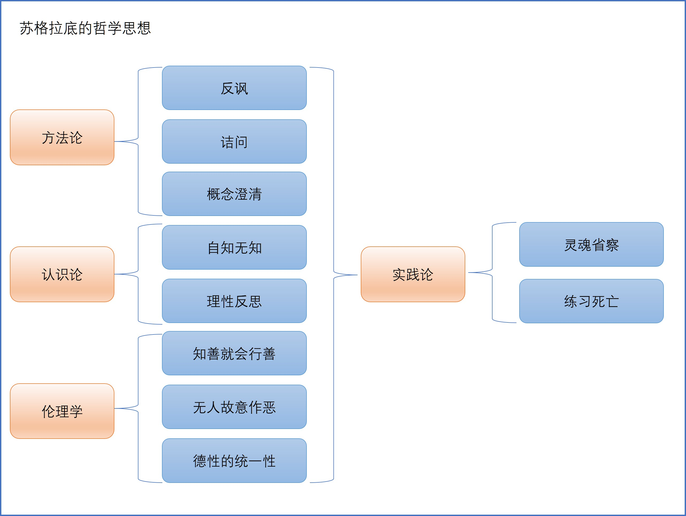
4 第四章：柏拉图
苏格拉底之死是西方思想史上的分水岭。对于他最杰出的弟子柏拉图而言，这不仅是失去恩师的个人悲剧，更是雅典民主政治彻底堕落的明证。一个以“民主”自诩的城邦，却以“民意”杀死了全希腊最智慧、最正义的人。这一创伤性的经历，促使柏拉图终其一生都在探寻一个核心问题：如何建立一个稳固、正义的国家，使其免于无知和暴民政治的侵蚀？他意识到，这并非单靠程序与权术即可解决的制度工程，而是更深的基础工程：若无关于真与善的客观尺度，政治只会沉沦为意见与权力的角力。
为了实现这一目标，柏拉图意识到必须为知识和道德寻找到一个永恒不变的、超越于感官世界之上的绝对基础来使法律与教育拥有尺度，也使统治者的判断能得以摆脱成见与私利的牵引。为此，他创立了西方历史上第一所真正意义上的大学——阿卡德米（Academy），并构建了一个博大精深、影响至今的哲学体系。其核心，便是著名的“理念论”。
4.1 理念论：可见世界背后的真实存在
柏拉图哲学的基石是他对实在的划分。他认为世界并非我们感官所见的单一模样，而是由两个截然不同的领域构成：
- 可见世界（The Visible World）：即我们通过感官所经验到的物理世界。这个世界中的一切事物都是变动不居、有生有灭、不完美的。我们看到的每一匹马都会衰老死亡，我们画的每一个圆都不可能绝对完美。它只是一个相对的、次要的实在领域。
- 理念世界（The Intelligible World）：这是一个超越于感官经验的、只能通过纯粹理性才能把握的形而上世界。这个世界由一系列永恒不变、完美无瑕的“理念”（Forms / Ideas）构成。例如，“马的理念”、“圆的理念”、“美的理念”等。
4.1.1 理念的特性与“分有”
“理念”并非感官可见之物，而是永恒不变、只可由理性把握的“原型”。它自同一而不生成不灭，提供了“何以为其所是”的稳定尺度：我们之所以能把纷繁的个别事物归在同一名称之下（诸圆为“圆”、诸正义为“正义”），就在于这些个别各自借由一种本体论的关系而联系到同一个理念。
柏拉图以“分有”形容这种关系：可见世界中的事物之所以成为其类，乃因“分有”了相应理念的本质。一匹具体的马之所以是马，不在于它恰巧长得像别的马，而在于它分有“马之自体”；一桩行为之所以称为正义，不在于多数人一时赞许，而在于它分有“正义之自体”。分有并不是物理性的混合或切割，而是一种使个别获得“可为此名”的本体关联，由此理念成为两重意义的原因：一是存在的原因（个别之为“某类”的根据），二是认识的原因（我们得以有通用定义与可论证的知识）。
同一理念可以被多样个别以不同程度地“分有”，于是便有了“更圆”“更美”“更正义”的层级差异，个别也因此带着“像—不像”的距离感而不断指向其原型。柏拉图在《理想国》中通过“床”的例子加以说明：有“床的理念”（唯一的原型），有工匠所制的具体床（对理念的摹拟），还有画家在画布上的床（对具体床的摹拟）；三者相去一层，现实程度与可知程度亦依次递减。理念之间并非彼此隔绝，它们存在“相互贯通”：如“正义”“美”“合宜”在同一行为中相互照映，但这一切的秩序与可知性，最终都要仰赖一个更高的原则“善”来统摄。
4.1.2 善的理念：理念世界中的太阳
在理念的层级之巅，是“善的理念”。柏拉图以“太阳比喻”说明其地位：正如太阳在可见界赋予万物以可见性、温养与生长的能量，善的理念在可知界则赋予一切理念以可知性与存在的光辉。对于认识者，善使心智获得把握真理的“视力”；对于被认识的对象，善使其显露为“可被认识的真”。
更进一步，柏拉图甚至说善“超越存在”，就尊严与力量而言高于“有”，因为它不仅使我们认识诸理念，也使诸理念“为其所是”。即善不是诸多“理念”中的一个，而是让一切理念能“是其所是”、也能被我们认识的最终来源。它不只是某个存在者，而是“存在与可知”的根本条件，地位高于一切存在者本身。好比太阳之于可见界：太阳不是万物之一，却让万物得见、得生。
于是，其他诸如“正义、美、真理”的理念，皆在善之光照下获得其尺度与完满。哲学教育的最高任务，便是引导灵魂由可见界的意见出发，经由数学等中介性学科的抽象训练，最终在辩证法的上升中直观善本身；唯有见到这一终极尺度者，方能在政治中正确安排其他一切善，故统治者“哲人王”的资格并非来自技艺的熟练或民意的拥戴，而来自对善的理念的直观与对城邦整体秩序的把握。由此，“太阳”的光不仅让我们“看见”，更让存在“得以存在”、知识“得以为知”，而哲学的使命，正是在这道光中辨明事物之所以然，并将之转化为灵魂与城邦的秩序。
4.2 知识论：回忆说与洞穴寓言
既然真实的世界是理念世界，那么我们如何才能认识它？柏拉图的知识论与他的理念论紧密相连。
4.2.1 知识即回忆
柏拉图将认识与理念论紧密缠合：若真实在于理念界，而感官世界只是其影与摹本，那么真正的知识就不可能来自感官的堆积，而必须诉诸灵魂对理念的把握。由此，“学习”被重写为一种“回忆”：灵魂在入身之前曾直观理念，投生时遗忘，现世的求知不过是把被遮蔽的真理重新唤醒。
所谓“回忆”，并非记起某个具体事件的记忆，而是从具体而不完美的事物中，认出其背后的“本身之物”。《斐多》以“自等本身”的例子阐明：我们见到等长的木棒或石块，却能判断它们“不够等同”，由此推知我们早已拥有“等同性本身”的尺度，否则便无法做出“未达标”的判断。可见，感官经验只是引发回忆的契机，不是理念知识的源头。
在《米诺》中，苏格拉底请来一个未受几何教育的奴隶男孩，地上以木棍划线作图，从一块边长为2英尺的正方形开始（面积为4平方英尺），要求男孩找出一块“面积加倍”的正方形（目标面积为8）。男孩先凭直觉回答“把边长加倍到4”，苏格拉底引导他计算：边长加倍，面积变为16，并非8；男孩改说“边长取3”，面积成了9，仍非8。至此，直觉路径被否定，男孩陷入“困惑”。
苏格拉底接着不直接给答案，而是让男孩在原正方形上作对角线，并在四周以这条对角线为边，拼出一个新的大正方形。通过数格与对比，他让男孩自己看见：原正方形的四个同样大小的小三角形围成的新正方形，其边长恰好等于原来的对角线，而新正方形的面积正好是原来的两倍。整个过程不靠公式灌输，而是靠一连串可视化的提问与作图，让男孩从错误—修正—洞见的阶梯上升，最后自己“认出”命题：对角线能将正方形面积加倍。
苏格拉底据此宣称：他并未向男孩“灌输”新知，只是唤起其灵魂中本有的真理。此处还提出一条关键区分：正确意见虽能导向正确行动，但如不以“原因的说明”拴系，便易流失；一旦给出可辩护的理由，正确意见便“被系住”，升级为知识。这说明知识不仅要“对”，还须“能说明其所以对”。
教育因而被塑造成一场“转身”：把灵魂从影像与意见转向理念与真理。《理想国》据此安排了完整的教育阶梯：算术、几何、立体几何、天文学、和声学等学科训练理智脱离感官依赖，以抽象思维习得“由假设出发、上升到非假设第一原理”的能力，最终在辩证法中直观“善”。数学不是目的，而是桥梁；它把心智从可见界的杂乱牵引到可知界的秩序。
综合而言，回忆说为“知识何以可能”提供形而上学根基：知识是灵魂对理念的再把握。他勾勒出柏拉图的核心信念：只有当认识立足于理念、受“善”的光照，知识才配称为知识。
4.2.2 洞穴寓言：从意见到知识的飞跃
柏拉图在《理想国》中以洞穴寓言描绘灵魂受教育的全过程：
一群人自幼被锁在洞穴里，颈脚被缚，只能直面洞壁。他们看到的只是身后火光照着木偶与器具在人为搬运下投射出的影子，并把影子当作真实。某日，其中一人被解开枷锁，艰难转身，看见刺眼的火和造影的木偶；再被强迫走出洞外，初遇阳光，只觉剧痛与眩晕，先借水中倒影与影像辨认事物，继而看清树木、动物与星月，最后才得以直视“太阳”本身——”太阳“象征理念界的最高原则“善”。若他重返洞中劝告同伴，因不适应黑暗而一时“看不清”，反被嘲笑、敌视，甚至遭到攻击。
寓言的要旨在于：教育不是把“视力”灌给盲者，而是使灵魂“转身”，即从错误的对象转向应当观看的对象，从错置的爱好转向值得爱的事物。这一“转身”对应“分线比喻”的四级认识：
最低一层是想象（Eikasia）：囚徒只见影像，把“像“当作”实”，靠熟练的识别与回忆混成一种伪知识。这是对图像、传闻、戏仿与框叙的轻信，认识对象最不真实、最不稳定。
其上是信念（Pistis）：被松绑的囚徒回头看见能投影的器物与火，进而把可见界的具体事物当作真。我们日常生活的经验判断多停留于此：它较影像更真实，但仍处于生成与变易之中，缺乏可普遍说明的根据。
再上是理智（Dianoia）：走出洞外，一时无法直视阳光的人，转而借助倒影与几何比例理解世界。数学式思维正是这种“中介性的理智”：它以抽象对象（数、形、比）工作，摆脱感官依赖，然而仍“带着假设工作”——从若干未经审查的公设推演结论，尚未追索其终极根据。
最高一层是努斯（Noesis）：当眼能够承受日光时，人直视“太阳”，亦即以辩证法由“被假设的原理”一路追溯到“非假设的第一原则”（善），再由善出发统摄、组织其他理念，形成一个“能说明其所以然”的知识体系。至此，认识摆脱了意见的偶然与数学的未审，成为真正的“可辩护的把握”。
四级认识不仅是主观明暗的层次，更对应对象的本体论层级：影像与具体事物属于可见界，关联意见；数学对象与理念属于可知界，关联知识。教育的任务，正是引导灵魂由可见界迁升至可知界：先以音乐与体操端正情感与习性，再以算术、几何、立体几何、天文学、和声学训练抽象思维，最后由少数通过严苛筛选者进入辩证法的操练，学会“从假设上升到非假设的第一原则”，直观“善”。看见“善”的哲人并非因此可以退隐；恰恰相反，他负有“下返洞中”的政治义务，以法律与教育重整洞内秩序。也因此，寓言兼具政治寓意：洞中的木偶手与影戏暗喻煽动家与诡辩术，未经教育的民众易受幻象操纵；归来的哲人因“眼不适暗”而受嘲，隐指苏格拉底的遭遇，说明哲人政治的必要与危险并存。
洞穴寓言与回忆说遥相呼应：感官所供给的只是引发回忆的契机，真正的知识来自灵魂对理念的再把握；“转身”的痛苦揭示了旧习与意见的强大牵引，而教育的成功取决于把爱好从影像与名利移向可知与善。最终，只有在“善”的光照下，存在才“得以为其所是”、知识才“得以为其所知”，灵魂与城邦才可能获得秩序。
4.3 灵魂学说：理性、激情与欲望的战车
柏拉图在《理想国》中提出灵魂三分：理性（logos）、激情或血气（thymos）与欲望（epithumia）。在《斐德罗》中，他以“战车神话”形象化这一结构：
灵魂如同一位驾车的御者与两匹性情迥异的骏马。御者象征理性，负责看清路向、统筹全局、制定尺度；右侧的白马高贵端正，爱荣誉、知羞耻，乐于服从号令，代表血气之力；左侧的黑马粗野倔强，耳根不正、口馋好色，牵恋金钱与享乐，代表多头欲望的牵拽。一个正义、和谐的灵魂，就是车夫（理性）在白马（激情）的帮助下，成功地驯服了黑马（欲望），使整个灵魂战车平稳地向着“善”飞升。而一个邪恶、混乱的灵魂，则是欲望失控，理性被激情和欲望所奴役的结果。
“战车神话”的另一条线是爱（eros）的教育。灵魂在天上随神巡游，曾得见“正义自身”“美自身”等理念，于是长出羽翼；堕落入世后，见到具体而可感的美（常在所爱之人身上）便激起“回忆”，羽翼隐隐欲生。此时黑马拉向肉欲，白马以羞耻与敬畏自持，御者痛加缰勒，反复训练，终于使战车在克制中升华，将欲求转化为对灵魂之美的守护与对真理的渴慕。爱因此成了哲学家的发动机：不是压杀欲望，而是通过理性的引导与激情的配合，使欲望转换目标，成为攀升之力。
这一图景也解释了“自制”与“放纵”的心理机制。所谓“知恶而行恶”的软弱，往往是理性尚未真正把握“善”，激情与欲望在无正确教育的情况下各自为政，以短视的衡量压过长远之利。修养的要点不在一味压抑，而在于调整分工：给欲望以正当满足与次序，给激情以荣誉与纪律，使二者成为理性的臂膀。当白马与黑马都被驯至可听号令，战车不但不慢，反而最快；德性不是“少了什么”，而是“各得其所”的充盈。
柏拉图通过灵魂三分比喻说明：通过教育、法度与日常训练，能够重建理性—激情—欲望的等级秩序；在审慎的引导下，让欲望转向更高的对象，让激情守护理性的判断，使灵魂的战车稳稳上升，向着“善”的光域前行。
4.4 理想国：正义的城邦与哲人王的统治
柏拉图的政治哲学可视为灵魂学说的放大写照：一个理想城邦（kallipolis）就是“正义”理念在社会尺度上的实现，其内部结构与一颗正义、和谐的灵魂完全同构。
4.4.1 城邦的三大阶层
柏拉图认为，灵魂由理性、激情与欲望三部分构成；相应地，城邦也分为三类承担不同职分与德性的公民群体。
统治者相当于理性，肩负“看清整体之善并统筹安排”的职责，他们必须是认识过“善的理念”的哲学家，其典型德性是智慧；
护卫者相当于激情，承担守卫城邦、贯彻命令的任务，德性是勇敢，尤其是“在痛苦与诱惑面前保存关于何者可畏、何者可为的正确信念”；
生产者相当于欲望，负责农业、手工、贸易与财富生成，基本德性是节制，即承认理性之统辖、同意“应当由更善者统治”。
柏拉图认为，当三者各司其职、互不僭越，城邦整体就达成了正义：正义并非某一件孤立之事，而是“各得其所”的秩序。
4.4.2 哲人王的统治与城邦教育
柏拉图认为理想国应该由”哲人王“进行统治。”哲人王“的统治安排，缘于柏拉图对权力与私利纠缠的深切警惕。真正的统治者不是最会赢得选票的人，而是能直观“善”的少数，他们通过长期教育与筛选，从热爱真理、善于学习、稳重而不贪的青年中产生。
为避免利益冲突与派系化，柏拉图为统治者与护卫者设计了严苛的“共同生活”：
他们不得拥有金银与私产，不从事营利，不积蓄“家务”，而以节制为荣；
家庭也被“公共化”，配偶与子女的归属按城邦安排，由公共的抚育体系接手，以免血缘小团体凌驾于公域之上。
这些安排的理由是明确的：一旦统治者拥有“自己的金银”和“自己的小家”，他们就会以“我的”为尺度看世界，城邦随即碎裂为“富者之城”与“贫者之城”。柏拉图宁要“合唱的齐整”，不要“各唱各的调子”，因为统治的难处不在效率，而在如何持久地抵抗腐败与分裂。
柏拉图对于理想国中的教育体制也有完整的设想与安排：
在柏拉图的构想里，护卫者的养成自幼即以“音乐与体操”为经纬：音乐并非单指乐器与歌舞，而是广义的人文教养，通过神话、诗歌、旋法与节奏熏陶爱憎的秩序，使心灵学会爱真、善、美，厌弃虚伪、放荡与怯弱；因此需要审查叙事与旋律，摒弃使灵魂软化的调式（如柔靡的吕底亚、伊奥尼亚），保留能培植节制与勇毅的多利亚、弗里吉亚。体操亦非粗暴的肌力崇拜，而是节制的身心历练，令护卫者强而不虐、勇而不暴，能承受痛苦与诱惑而不折其志。通过音乐端正爱憎，通过体操稳固意志，血气被教育成理性的忠诚助手，而非莽烈的暴君。
在基础德性稳固之后，教育进入“转身”的第二阶段：以数学五科磨砺抽象理智，使心智逐步摆脱感官牵制。算术训练把握“同一之中之多”、多之中之同；平面几何与立体几何教人直面不依赖感官的形与比；天文学不是仰观可见天象的绚烂，而是在可知界中理解匀圆与比例的秩序；和声学亦不依赖悦耳的经验，而在数比中探求协和的必然。这一整组学科像是通往理念界的阶梯，要求学生“带着假设工作”并学会抽离与贯通。依《理想国》之程式，二十岁左右选拔出最善学者，使之研习十年；三十岁再筛选少数品格既定、理智坚实者，准其进入辩证法。
辩证法是第三阶段，也是最高的学艺：不再满足于在假设之内推演，而是由假设出发逆流而上，追索到“非假设的第一原则”——善之理念；再从善出发，向下组织并统摄其他理念，使整个知识体系成为“能说明其所以然”的秩序。柏拉图谨慎地将辩证法推迟至三十岁之后，理由是过早的辩难会使青年只会拆解权威却无以立其所当立，转批评为玩弄。他要求先有经年累月的品格训练与数学锻造，再以五年辩证操练成其“能见之眼”。此后，哲学家不得即位，而须再接受十五年现实政务与军事的历练，让“理念之见”在多变人事中受检验、学分寸。至五十岁，唯有极少数“既见善、又能持守”的人，方可承担统治之任，成为“哲人王”。
柏拉图以“洞穴寓言”规定了哲人的政治义务：”下返洞中“。城市以最好的教育与资源抚育了哲学家，哲学家便当在立法上以“可普遍说明的理由”而非好恶为准，在教养上使下一代的爱与憎、勇与节，按共同尺度定向。正因法律与教育共同完成灵魂的“内在对齐”，政体方能久固；而统治者之所以合格，不在其技巧与声望，而在其判断背后有一个超越意见的尺度——善之理念，足以抵抗私利与派系的牵引，将个人的“我好”转化为城邦的“共同善”。
4.4.3 政治体制的堕落
柏拉图把政治体制看作灵魂秩序的放大版：灵魂里谁当家，城邦里就成什么法。理性统摄，城邦便由智慧与法度支配；一旦理性退位，血气与欲望相继篡权，政体便走向下坡路。先是以荣誉为旨归的尚武之治取代理性之治，随之被逐利的欲望把持而滑向财阀寡头；寡头压抑多数人的欲望，终于在“自由”名义下爆发为无节的民主；而民主中的放纵为强人攫取权力打开通道，恣意的私欲化身为僭主，城邦遂由有序归于混乱，政治体制由此完成堕落。
理想国(Aristocracy)由理性主导、血气协助、欲望守分，所以正义就是“各司其职，各得其所”。但这种秩序不会自动保鲜。教育松懈、婚配失衡、习俗松动，会在一代代里积累偏差，政体就会从理性之治，滑到被血气、财富和放纵轮番主导，最后落到僭主的一己之欲。
荣誉政体(Timocarcy)是理想国堕落的第一站：理性并未被驱逐，但退居次席，血气登上主位。转变的原因往往并不戏剧性，而是从教育与婚配的细微走样开始——音乐之教（节律、叙事、旋法）被削弱，体操与军备被过度强调；下一代护卫者由“以善为尺度”悄然改为“以胜为尺度”。城市的气质随之改变：尚武、整齐、服从命令，藐视柔弱与多思；在对外关系上好战求胜，在城内治理上严厉而有纪律，却对学术与哲学抱持戒心，视“多问其所以然”为削弱意志。荣誉政体的优点是能迅速动员、敢于牺牲、保持公共秩序；但它的判断标尺从“何为善”滑向“谁得胜”，把胜负当作善恶的替身，久之便难以反身自省、修正方向。
再下一步是寡头政体(Oligarchy)。寡头政体承接荣誉政体而来：胜负的标尺进一步让位于财富的标尺。参政资格被明文系于财产门槛，选官与任职以“有产”为先；法律的重心从培养德性转向保障所有权与契约执行，债务奴役与没收条款严苛，贫者一旦失足便被逐出公域。城邦随之成为“两个城市”的并置体——“富者之城”与“贫者之城”同处一地而各有其心：富者以治安与资产安全为第一目标，贫者以生计与尊严为主要诉求，互不信任，时相摩擦。
这种制度有其效率：节俭、储蓄、计算、规避风险成为公共美德，财政保守、账目分明、税赋有据，公共事务被压缩为“保值增值”的治理术；军备更多依赖雇佣兵，避免高风险的大战；教育偏好技艺与营利之学，鼓励金融与贸易才能。然而寡头政体的内在矛盾也随之加剧：它一方面提倡节制，另一方面默许对金钱的贪恋；对内以法维稳，却以严刑与资格审查将大量公民排除在政治共同体之外，形成长期的怨气堆积。柏拉图称其为“欲望上升但受算计与恐惧束缚”的城邦：统治者惧贫者之数，贫者惧法律之威，彼此以恐惧维持秩序。
接着是民主政体(Democracy)。民主政体承接寡头政体的裂痕而生：债务、失业与被排除者的怨气长期积累，贫者以“平等与自由”为号召重写秩序。法律取消财产门槛，扩张公民资格；议事广场人声鼎沸，人人可言、万事可为，生活方式并列共存，从克己的禁欲到奢靡的享乐，从苦修的学派到诙谐的表演，皆得其所。权力以频繁轮替自豪，以限制任期和抽签分配职务为公平象征；但也因此形成强烈的短期倾向：统治者迎合当下意见，难以推进需要牺牲与延迟满足的长期工程。共同尺度随之松脱：当“善”的客观标准不被承认，公共判断多半退化为“多数赞成”的意见结算。
民主的优点是自由，它释放创造力与个体差异，给被压抑的群体以发声空间；但它的脆弱也在自由的误解：把一切约束都当作专断的前兆，把必要的教育与节制视为“反自由”。对权威与专业的普遍不信任，催生一种“意见平权”的幻觉：医生与病人、舵手与乘客的判断被放在同一秤盘，技术性的长远决策被即时的热情淹没。媒体与演说在此成为关键制度事实：在“洞穴寓言”的意义上，影像与叙事更易操控人心，煽动者通过简化的对立、情绪化的标签与敌人想象凝聚支持，理性讨论难以维持所需的时间与注意力。法律仍在，但执行被人气与舆情左右；公域碎片化为一个个自我同温的圈层，公共理性所需的共同语汇日渐稀薄。
僭主政体(Tyranny)是堕落链条的终点：在民主的极端自由中，公众对一切限制过敏，城邦失去共同尺度，煽动者以“保护自由”和“替民出气”为名汇聚人心。他先以慷慨施舍、免债减税收买支持，树立“敌人”转移矛盾，继而要求护卫与特权；当反对声起，他以清洗异己、恐吓审判巩固权力。法律由此反转：不再是共同尺度，而是僭主意志的工具。
僭主的统治术围绕三个动作反复展开。第一，制造外敌与内奸。对外挑起冲突，以战事团结国内；对内标定“可恨之人”（富者、贤者、不同政见者），通过没收与清算来供养亲信，并在持续的恐惧中迫使沉默。第二，封堵贤言与断绝教育。贬斥能以理由争辩的人，把教育诬为洗脑，将公共讨论替换为口号与仪式，令城邦长期停留在“洞穴”的暗处，被影像与情绪牵引。第三，养成依附网络。以赏赐与职位网罗阿谀者，用密探与告密破坏信任，使公域碎裂为孤立的个人与派系，从而降低集体抵抗的可能。
柏拉图的堕落谱系是一套灵魂诊断学：理性退位→血气当家→财富为王→任性称尊。决定走向的不是政体名称，而是教育、婚配与习俗能否把权力拴在“善”的尺度上；一旦这根绳松脱，城邦便沿惯性滑向僭主，反之方有止跌回升的可能。
4.5 柏拉图：高贵的谎言
在柏拉图看来，政治共同体的稳定有赖于一种可被普遍接受的公共叙事：我们是谁，为什么在一起，各自该做什么。这种叙事不能只靠武力支撑，而必须诉诸一种被共同信奉的“理由”。由此，他提出“高贵的谎言”作为维系秩序的精神纽带。柏拉图区分两类谎言：“真正的谎言”是把人引向恶，使灵魂在根本上误入歧途；“言辞上的谎言”则是出于治理需要而编织的虚构，目的在于引导人走向善与共同利益。前者应当排斥，后者在必要时可以使用。统治者的“高贵的谎言”正属于后者，它并非为一己之私，而是为城邦整体的正义与和谐服务。
“高贵的谎言”的要点不在欺骗本身，而在其“高贵”——它以共同善为目的，以秩序与正义为准绳。哲人王之所以被允许诉诸这种言辞上的虚构，正因为他以理性衡量整体利益，而非服务于私欲。通过将分工的合理性寓于神话，柏拉图试图让政治秩序获得情感上的黏合力，使理性原则能够在人民的生活世界中落地生根。
4.5.1 金银铜铁的神话
在《理想国》中，哲人王以理性统驭全局，但仅靠理性命令并不足以让各阶层心悦诚服。要使人们自愿承担各自的职责，必须借助一套能直达情感与认同的公共叙事——“金、银、铜、铁”的神话。神话宣称，城邦的每个公民虽同由大地孕育，却在灵魂中被掺入不同的“金属”：掺金者天生适于治理，掺银者适于守卫，掺铜与铁者适于生产与服务。人的价值不在出身，而在灵魂所含之“金属”；职分与分工因此被理解为顺应天赋的自然安排，而非来自外在压迫。借助这一叙事，统治获得合法性，各阶层也获得清晰的自我理解：各安其分不是屈从，而是成就自身应当完成的事。城邦由此更多依赖信念而非强制来维系和谐，避免因嫉妒与争权引发的离心与冲突。
神话同时给出社会等级的传承图景：黄金本性的统治者，其子女通常继承黄金的品性；白银本性的护卫者及铜铁本性的劳动者，其后代多半也具相应属性。然而这并非绝对划线，各阶层亦可能生出不同“金属”的子女。因而城邦必须谨慎甄别后代本性，确保各安其位，只允许真正具有黄金本质者掌握统治权，以免政务落入不相称的灵魂之手而造成政治制度的堕落。
柏拉图也指出，当这类神话沉淀为习俗与传统，便能在代际之间形成稳定的信念结构；不同的神话传说、报纸书刊等替代叙事需要被审查与下架，来使得主导叙事的凝聚力与权威性增强，政治秩序也更为稳固。即便在现代语境中，“高贵的谎言”并未消失，只是更换了表述与载体。政治无法脱离叙事的力量，正是通过这些被共同信奉的故事，人们理解自身、彼此联结，并在公共生活中找到位置与意义。
4.5.2 叙事的力量
政治首先是对混乱的驯服，是把无序缝合为可持续的秩序。秩序一经确立，便伴随分工与等级：有人吃肉，有人喝汤。这套等级若只靠武力强制维系，终将脆弱；它必须深入人心，化作一种可被认同的共同故事。统治因此总是“左手宝剑，右手圣杯”：一手是强制力，一手是正当性。东方的“礼乐”正是这种叙事的典型表达——“礼”划定等级与角色边界，使各安其位；“乐”则调和情感与欲望，为等级秩序注入情绪上的认同与和谐。
在人们设想“只有秩序、没有等级”的社会时，现实中的协调难题往往首先浮现。秩序意味着持续的分工与配合，而分工一旦精细，就会伴随信息不对称、责任边界与决策效率问题。谁来最终拍板、谁对失误负责、谁在冲突中仲裁，这些都要求形成相对稳定的角色分化。角色分化本身便是轻度等级的开端，它未必表现为身份特权，但会以权限、职责与声望的不对称出现。没有清晰的权责结构，秩序就容易在关键时刻失灵；而一旦确立权责，社会就已经在事实层面承认了某种等级。
一些看似“去等级”的实践也会在运行中自然生成“影子等级”。开放的知识协作就是典型。维基百科早期强调开放与共治，但很快出现管理员、仲裁委员会以及页面保护等机制，以应对破坏、争端与质量控制。开源社区亦然，项目若缺少核心维护者与代码合并权限的分层，版本发布与安全响应就会瘫痪；许多项目因此形成“核心维护者—贡献者—用户”的结构，甚至出现“终身仁慈独裁者”的协调型领袖。表面上它们打破了传统科层，但在权限、话语权与声望上仍呈现清晰的次序，只是以技术能力与持续贡献为依据，而非正式官职。
古代城邦与现代民主也提供了制度层面的例证。雅典民主以抽签、轮任抑制权力垄断，但仍保留将军等需要专业判断的要职，并在诉讼、财政、对外事务中承认经验与能力的差异。现代代议制在“一人一票”的政治平等之上，建立委员会体系、事业编制与专业官僚，将议程设定、技术评估与执行监督置于分层的程序架构内。政治叙事随之转型，不再诉诸出身神授，而是诉诸机会平等、能力选拔与公共问责，使等级以合法性与可更替性为条件被临时接受。
叙事在这里起着把差别“转译”为可承受秩序的作用。传统叙事以血统、神授与天命稳定分层；现代叙事通过“机会公平”“程序正义”与“底线保障”来解释并校正差别，将部分结果归因于运气与处境，从而引出再分配与社会保险的正当性。没有叙事，人们只会把差别感受为赤裸的不公；有了叙事，分工与差别才被理解为在规则内、可申诉、可改进的安排。经验表明，完全没有等级而长期稳定的秩序极难维系，更可行的路径往往是把不可避免的角色差异置于清晰规则、可被监督与纠偏的框架之中，并以能被多数人内心接受的叙事赋予其正当性。
现代政治叙事在此基础上转换表达：你之所以不“吃肉”而“喝汤”，并非出于道德劣等，而常是运气与处境所致；既然运气不可归责，社会便有义务以制度予以扶助。罗尔斯提出“无知之幕”的设想，要求我们在不知自身位置的情形下选择正义原则，由此为照顾最不利者提供理由。这样的叙事并未取消秩序与等级，但通过将差别归因于运气并配以救济与校正，使等级获得伦理上的可承受性，令秩序与等级可被心甘情愿地接受。
4.6 柏拉图：柏拉图式爱情
所谓“柏拉图式爱情”，并非压抑肉身欲望，而是把爱欲导向永恒之事物，使它从占有的冲动转化为通向不朽的创造力。人之所以恋爱，深处来自对死亡的恐惧与对不朽的向往。肉身之生育让生命以血脉延续；灵魂之生育则以思想、德行与作品超越肉身的限度。
4.6.1 死亡与不朽
我们不想死，因为死意味着消失，而我们渴望不朽。柏拉图认为，人最根本的爱欲就是“欲求不朽”。有限的生命面对死亡的阴影，总在寻求越出有限的途径；爱之所以强大，正在于它把人从转瞬即逝的此刻引向某种持久。爱欲因此成为对有限性的超越运动，它的终点并不是占有，而是向神一般的永恒不朽靠近。在这里，柏拉图把生育视为爱通往不朽的道路，并区分出两种不同层次：肉体的生育与灵魂的生育。前者是与美丽的肉体结合，使血脉延续，让基因在后代之中保有一份“肉身的永恒”；后者则是通过爱智慧、学习哲学、广义的求知，使灵魂与永恒的理念接通，在真与善与美的创造中，留下可传之物。两种生育对应两种爱情：肉体之爱与灵魂之爱。柏拉图不否认肉体之爱的自然性与力量，但他把灵魂之爱置于更高的位置，因为它能生出知识、思想与伟大的作品，使个体的生命通过精神的形式延续下去。中国古人讲“三不朽”，立功、立德、立言皆是灵魂之生育的结果；电影《寻梦环游记》所说“被遗忘才是真正的死亡”，也是同一层意思：人的肉体必将消散，但被记得的德与言即是一种不朽。由此看，灵魂之爱的冲力并不弱于肉体之爱的性欲，它同样炽烈，只是把冲动转化为创造，把占有转化为生成。正如人们常说“人的生命只有一次”，若把这一次燃烧为对真与善的献身，死亡便不再只是终点。
问题在于，永恒的事物只是抽象的理念，而我们的爱总是从具体可见之物开始。怎样才能从爱一个具体的对象，走到对抽象理念的爱？柏拉图的回答是一条需要训练与攀登的“爱的阶梯”。
4.6.2 爱的阶梯
柏拉图认为，爱有灵魂与肉体的高下之分，爱的能力有阶梯之分。这条阶梯不是一次跳跃完成，而是在审美与理性的共同引导下，步步上升。最初，爱者为一个具体而美的身体所吸引，情感被形貌点燃；随着目光的开阔，他不再执迷于此一身体，而能在许多美的身体中把握其共同的“使之为美”的原因，从个别之美过渡到爱普遍的身体之美。接着，他会意识到灵魂与德性的美高于身体的美：节制、勇敢、公正、机敏等德性，比短暂的颜貌更值得爱慕；在与高尚灵魂的交往中，他被激励去学习与锻炼，让自身的灵魂也能“怀孕”和“生产”，在对谈与实践中孕育出思想与德行。再往上，爱者开始欣赏知识之美，法律、制度与风俗之中的秩序与比例，因为它们把众多生命编织为可共同栖居的城邦之善；此时，爱从私人之爱转化为公共理性的创造，去爱良法美政之“形”。由此，他进一步体会到诸种知识与技艺的美：证明的严整、和声的匀称、度量的合宜，它们让灵魂贴近可理解的必然与恒常的尺度。直到最后，他才有能力直面“美本身”——那不依赖任何具体对象、不因时地而增减、作为一切美之所以为美的源头。其实就是爱“美”的真理，就是“爱智慧”。
总结来说，柏拉图式的爱情，一可以说是对永恒事物的灵魂之爱，二可以说就是去求知，就是爱智慧。
4.6.3 爱智慧
在古希腊，研究哲学首先是一种由知识本身带来的愉悦，是“智识享乐主义”的实践。求知不是为了功利的回报，而是因为它最能满足灵魂的渴望；在哲学家那里，最深的爱欲指向智慧本身，所谓“求知欲”就是将爱之冲力转化为对真与理的追逐。知识之于哲学家，近乎一种“色情”：它以不可抗拒的吸引力把人从零散的见闻牵引向可证明、可理解的整体，把短暂的好奇提炼为恒久的体认。
正是古希腊学者们这种对理性与知识近乎疯狂的崇拜，孕育了后世科学的可能。对希腊人而言，理性不是冷的工具，而是一种被爱欲点燃的追求；他们以非理性的对智慧的爱支撑理性的实践。在更晚的罗马时代，社会生活回归“正常”，实用与娱乐占上风，哲学的锋芒因此趋于式微。但那颗理性与科学的火种并未熄灭，它保存在典籍与学派的训练中，等待新的时代将其延展为制度化的探究。
4.7 章节小结
本章以苏格拉底之死为起点，展示柏拉图以理念论为基石，为知识与政治奠定客观尺度的努力。他将世界区分为可见界与可知界，认为个别事物之所以“为其所是”，在于“分有”永恒不变的理念，而诸理念的秩序最终受“善”的理念统摄。借由“太阳—分线—洞穴”三重比喻，柏拉图把教育理解为灵魂的“转身”：从影像与意见出发，经由数学的抽象训练，在辩证法中直观“善”。这同时奠定了哲人王统治的正当性——统治的资格不在权术或票望，而在对“善”的见到与对整体秩序的把握。
柏拉图据灵魂三分构想城邦三阶层，以智慧、勇敢、节制对应统治者、护卫者与生产者，正义即“各司其职，各得其所”。为抵御私利与派系，他提出统治者与护卫者的共同生活，并以“高贵的谎言”与“金银铜铁的神话”为公共叙事，赋予分工以情感黏着与合法性。由此引出“叙事的力量”：政治秩序不能只靠强制，更需可被内心认同的共同故事；在现代语境中，叙事转而诉诸机会公平、程序正义与对不利者的制度性扶助，使差别在可监督、可纠偏的框架内获得伦理承受力。与此同时，柏拉图刻画了政体堕落的谱系：当理性退位、血气篡权、财富为王、自由滥放，城邦终滑向僭主，提示教育与习俗松弛的制度后果。
关于爱，柏拉图将“欲求不朽”视为人之深层动因，区分“肉体之生育”与“灵魂之生育”，并以“爱的阶梯”说明如何由具体之美上升至“美本身”。所谓“柏拉图式爱情”，不是压抑肉体欲望，而是“爱智慧”，把求知本身视为至乐。
综合来说，本章以“理念的客观尺度—灵魂的教育—城邦的秩序—叙事的正当化—爱与求知的升华”为脉络，呈现柏拉图形而上、政治学、灵魂学的完整构想。
5 第五章：亚里士多德
5.1 亚里士多德：形而上学
在西方哲学传统中，“形而上学”（Metaphysics）这一概念通常被视为哲学的核心与最高形式。然而，在中文语境中“形而上学”常被理解为一种与辩证法相对立的思维方式，即以孤立、静止和片面的方式理解世界。这种解释实际上并非源自古希腊哲学本身，而是经过了近代哲学尤其是康德与黑格尔的再阐释，并通过后来的哲学教科书体系（尤其是苏联传统）被进一步固化。因此，这一理解更多反映的是近现代哲学对“形而上学”的批判性重构，而非其原初含义。
从词源上看，“Metaphysics”并非一开始就是一个严格的哲学术语。它最初来自于对亚里士多德著作的编纂方式。亚里士多德的学生及后来的整理者（通常认为是安德罗尼科斯）在编辑其著作时，将一组讨论“存在本身”的文本置于《物理学》（Physics）之后，称为“在物理学之后的著作”（ta meta ta physika）。因此，“形而上学”最初只是一个编目意义上的名称，而非概念定义。然而，随着哲学的发展，这一名称逐渐获得了深刻的思想内涵。亚里士多德本人将这一研究领域称为“第一哲学”（First philosophy），其任务不是研究具体的自然事物，而是探究“存在之为存在”（being qua being），即一切存在物之所以为存在的最根本根据。在这个意义上，形而上学可以理解为对“本质”或“存在本身”的研究，是一门超越具体经验对象的根本性学问。
中国传统中“形而上者谓之道，形而下者谓之器”的表述，常被用来对应亚里士多德的这一思想：形而上学关注的不是具体之物（器），而是使万物成为万物的根本原则（道）。因此，从思想功能上看，形而上学可以被理解为一种“本质学”或“存在论”的探究。
5.1.1 人类所有知识的分类
在古希腊时期，“哲学”一词并不指代某一门特定学科，而是涵盖了人类一切系统性的知识活动。从对自然现象的观察，到对伦理与政治生活的反思，再到艺术创作与修辞技巧，均被纳入“爱智慧”的统一追求之中。亚里士多德首次对人类知识进行了具有开创意义的系统划分。他不再将知识视为一个松散的整体，而是根据其目的与对象的不同，将其区分为不同类型，从而奠定了后世学科分化的基础。
亚里士多德将全部知识划分为三类：理论知识、实践知识与创制知识。理论知识（理科）以认识真理本身为目的，关注不依赖人类行动而存在的对象，包括数学、物理学以及形而上学；实践知识（社科）则以指导行动为目标，涉及人类如何在现实生活中作出选择与判断，因此涵盖伦理学、政治学与家政学（即经济学）等领域；创制知识（工科）则指向“生产”或“制作”，即通过技艺将某种尚未存在的对象带入存在之中，例如诗学、修辞学以及各种工艺技术。这样的划分不仅区分了知识的内容，更揭示了不同知识形态背后的目的差异，即真理、行动与创造。
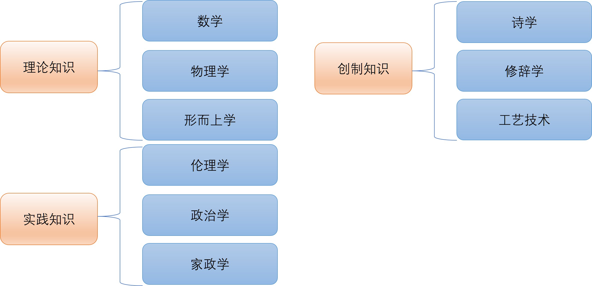
在这一体系之中，亚里士多德赋予理论知识以最高地位，因为它不以功利目的为依归，而是以“认识何为真实”为最终目标。而在理论知识内部，形而上学又被视为最高层次的学问。这是因为数学研究的是抽象的数量关系，物理学研究的是可感知的自然事物，而形而上学则进一步追问一切存在物之所以存在的根本原则。当具体科学回答“事物如何存在与变化”时，形而上学则追问“存在本身为何可能”，从而将思考推进到最根本的层面。也正是在这一意义上，亚里士多德将形而上学称为“第一哲学”，认为它不仅在知识体系中居于顶端，而且为其他一切学问提供最终的根据与解释框架。
5.1.2 亚里士多德的形而上学
在亚里士多德的哲学体系中，形而上学是整个哲学的核心与顶点。它所关注的并非某一类具体存在物，而是“存在本身”，即所谓“作为存在的存在”（being qua being）。这一问题的提出，标志着哲学从早期自然哲学对具体本原（如水、火、原子等）的探寻，转向对存在本身之条件与结构的反思，从而开创了后来被称为“本体论”的研究传统。与前人自然哲学家们试图通过经验观察归纳出世界本原的路径不同，亚里士多德试图在更高的抽象层面上把握存在的普遍规定性。
在具体分析中，亚里士多德首先区分了“实体”（Substance）与“偶性”(Accident)。一切具体事物都呈现出多种性质，例如颜色、形状、位置、重量等，但这些性质并不能独立存在，它们总是依附于某种“东西”。例如，“红色”不可能脱离具体对象而存在，必须依附于某个具体之物,如“红色的苹果”。由此，亚里士多德提出，真正具有独立存在地位的是“实体”，它是承载一切属性的基础，是“使一物成为其所是”的根本根据。属性可以变化，而实体在变化之中保持同一性，因此实体构成了存在的核心。
为了进一步说明实体的内在结构，亚里士多德提出了“形式”(Form)与“质料”(Matter)的区分。一切现实存在物，都是形式与质料的统一体。质料提供了存在的可能性，是事物得以生成的基础，但它本身是不确定的；形式则赋予事物以确定性，使其成为某种具体的存在。例如，一块大理石本身只是潜在的雕像，而当它被赋予某种形象时，才成为一件具体的雕塑作品。在这一关系中，形式被认为相对于质料而言更为根本，因为正是形式规定了“这个东西是什么”。因此，尽管实体由形式与质料共同构成，形式却更接近于事物的本质。
与形式—质料的区分相对应，亚里士多德进一步提出“潜能”(Potentiality)与“实现”(Actuality)的概念，用以解释变化与生成的过程。一切事物都可以被理解为从潜能走向现实的过程。潜能意味着某种尚未实现但可能实现的状态，而现实则是这一可能性的完成。例如，种子具有成为树的潜能，而成长中的树则是这一潜能逐步实现的过程。在这一意义上，变化并非无序的生成，而是潜能向实现的有序展开，其中形式起着决定性的引导作用。
相对低级的存在构成了高级存在的质料，而高级的存在则通过赋予其形式，使其由潜在状态转化为现实，从而实现其本身的规定性。当亚里士多德将这一分析推向极致时，他不得不面对一个根本问题：如果一切运动与变化都需要原因，那么这一因果链条是否可以无限倒退？为避免这一逻辑困境，他提出必须存在一个“永恒实体”，“第一推动者”，即“不动的推动者”。这一存在不依赖他物而运动，却是一切运动的最终原因。它没有任何质料，是纯粹的形式；它没有任何潜能，是完全的现实性。正因为如此，它既是宇宙万物的终极原因，也是万物所趋向的最终目的。在这里，亚里士多德的形而上学自然地过渡到一种神学视域：哲学的最高问题，最终指向一个自足、永恒且纯粹现实的存在。
这一整套形而上学体系，在此后西方思想史中产生了深远影响。它不仅为中世纪经院哲学提供了理论基础，也在很大程度上塑造了近代早期科学对于“因果性”与“终极解释”的理解方式。例如，在牛顿的自然哲学体系中，尽管他通过数学方法精确描述了天体运动与力学规律，但在解释宇宙秩序的最终来源时，仍然诉诸一个超越自然界的第一原因或最高秩序。这种思路与亚里士多德关于“第一推动者”的设想在逻辑结构上具有明显的相似性，即认为宇宙的运行最终需要一个不依赖他物、具有最高现实性的根本根据。因此，即便在科学革命之后，形而上学所确立的“追问终极原因”的思想路径并未消失，而是以新的形式继续影响着人类对世界的理解。正是在这一意义上，亚里士多德的形而上学不仅是一套理论体系，更构成了西方哲学传统的深层结构。科学、哲学与神学也并非彼此割裂的领域，而是共享着同一套对“终极根据”的追问方式，其内在根源都可以追溯到形而上学传统。也正是在这一意义上，可以说西学的基因就是形而上学。
二次使用
引用格式
@online{fu2026,
author = {Fu, Yuxin},
title = {变得有文化：西方哲学史入门},
date = {2026-03-29},
url = {https://yuxinfu.me/blog/2025-10-01-西方哲学史/},
langid = {zh}
}